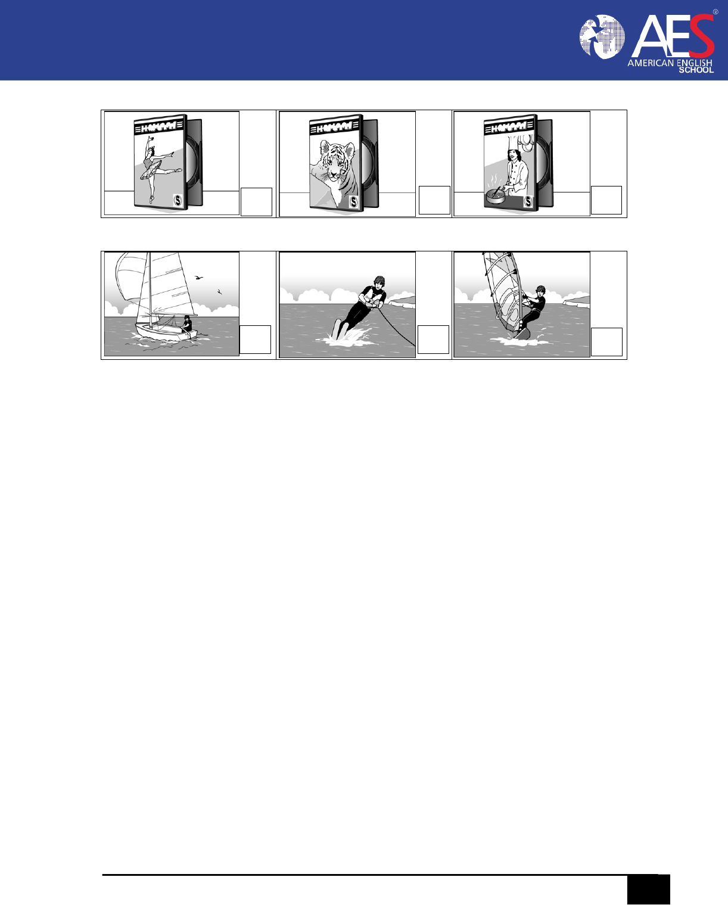
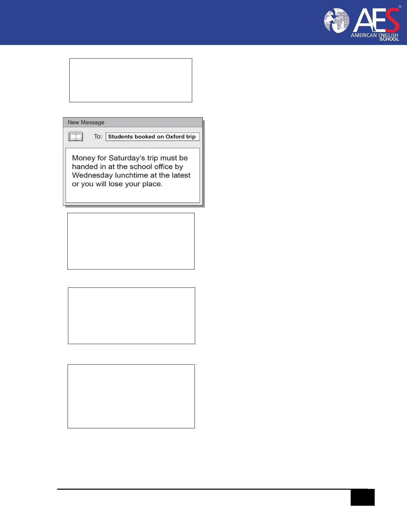

1
AMERICAN ENGLISH SCHOOL AES
PLANNING SHEET BOOK 9
1
The Youngsters Behind Youtube
Grammar Review
Sample Test ( Cambridge – Listening)
2
Beats Me
When to use Female Nouns
Reading Skills
Listening Practice
Grammar Review
Slang
Oral Practice
3
Good for you
Debate
Listening Practice
Grammar Review
Slang
4
Good luck
Your negative attitude can hurt your
career
Reading Skill
Sample Test ( Cambridge – Reading)
5
Who cares
“What is freedom of expression?”
Debate
Grammar review
Reading
Oral Practice
Sample Test (Cambridge – writing)
6
Big Deal
The Colorful World of Synesthesia
Reading Skill
Sample Test ( Cambridge – Listening)
2
AMERICAN ENGLISH SCHOOL AES
CLASS
The Youngsters Behind Youtube
Before You Read
A. Connect with the topic. In the chart below, list two more ways you
interact with friends online. Then list the ways you do each activity.
Things you do with friends online
How do you do it?
1. Share pictures
By e-mail
On social networking sites
On my blog
2.
3.
B. Pair work. Compare answers Activity A. How would you interact with
friends if you didn't have access to e-mail or the Internet?
C. Preview the reading. Look quickly to complete the Previewing Chart
below.
Previewing chart
1. Title of the reading: __________________ _
2. Names of people and companies
in the reading.(list 3 mores)
3. Key words. (What words appear
in the reading several times? List 3
more)
Steve Chen
________________
Business
_________________
________________
________________
_________________
_________________
4. I think this reading is probably about:
3
AMERICAN ENGLISH SCHOOL AES
Reading Passage
The Youngsters Behind VouTube: Steve Chen
and Chad Hurley
by Evan Carmichael
1 "Everybody aspires to be a star:' says Steve Chen, a Taiwanese immigrant who
came to the United States with his family in hopes of a better life. Chen's
aspirations became a reality when he, along with Pennsylvania-born Chad
Hurley, created what is today the world's largest s online video website.
5 YouTube has now become a global sensation, propelling both Hurley and Chen to
the top of Business 2.0's list of "The 50 People Who Matter Now." YouTube was
also named TIME magazine's 2006 "Invention of the Year:' When Hurley and
Chen decided to sell their company, they did so for a hefty price tag of $1.65
billion.
10 Steve Shih Chen was born in August 1978 in Taiwan, where he lived until he
was eight years old. His family then emigrated to the U.S., where Chen attended
John Hersey High School and later the Illinois Math and Science Academy. After
graduating from high school, Chen enrolled in the University of Illinois at Urbana-
Champaign to pursue a degree
15 in computer science. But it would be a part-time job he was hired for
at a small e-commerce start-up called PayPal that would change his
life forever. Chad Meredith Hurley was born in 1977 as the middle child I of
parents Donald and JoAnn Hurley. His father was a financial consultant, while
20 his mother worked as a local schoolteacher. Chad, along with his older
sister and younger brother, grew up near Birdsboro, Pennsylvania.
After graduating from Twin Valley High School in 1995, where his mother
continues to teach in the gifted program,2 Hurley enrolled in the Indiana
University of Pennsylvania to pursue a bachelor's degree in fine art.
25 Before graduating from the university, Hurley also applied for a job at
PayPal. He was flown to California and, as part of his job interview, was
asked to design a logo for the young company that would demonstrate
his artistic abilities. Hurley got the job, and the logo he designed remains
PayPal's official logo to this day.
I. the middle child the second-born child in a family with three children
2. gifted program a program of study designed for exceptionally intelligent
students
30 It was while working at PayPal that Hurley and Chen became fast
friends. 3 They began to spend their free time discussing several different
business ideas. When eBay purchased PayPal for $1.54 billion, the
two received large bonuses for their role in growing the small start-up.
They decided to use their money to create their own venture. With
35 Chen's engineering skills and Hurley's creativity, they thought forming
a company together was a plausible idea.
In January 2005, Hurley and Chen attended a friend's dinner party
in San Francisco. They had taken a few digital videos of the event and
wanted to share them with each other the next day, but could not find a

4
AMERICAN ENGLISH SCHOOL AES
40 good means to do so. The files were too big to e-mail, and posting them
online would take hours. With that, Hurley and Chen had their first idea
for a sustainable business. Using the money they had received from the
PayPal buyout , Chen and Hurley decided to create YouTube, to make
uploading and sharing videos online as easy as anyone could want. It
45 was the birth of a revolution.4
"We're not in a hurrY:' Hurley once said. "We're interested in building
our community. We're trying to improve discovery. We're trying to
improve the experience for people on our site." They might not have been
in a hurry, but their site sure grew in one. Today, YouTube has almost half
50 of the online video market, and it is still growing. How did a university
dropout and a boy who loved to draw become the industry leaders they
are considered now?
User-Oriented: Hurley and Chen knew from personal experience how
difficult it was to upload and share videos online. And that was why they
55 decided to create You Tube. They wanted to create a website that others
like themselves would find useful. By prioritizing its users' needs and
being as easy and interactive as possible, YouTube was able to find a loyal
audience that numbers in the millions.
Unique: When you visit YouTube.com, you are most likely searching
60 for something that you cannot find anywhere else. From long-lost '80s
music videos, to political speeches, to the current events of today, you are
almost guaranteed to find it on YouTube. And that is why people keep
coming back for more.
3 fast friends very good friends
4 the birth of a revolution beginning of a dramatic change in the way things
are done
Viral: Both YouTube's marketing strategy and growth as a result have
65 been viral in nature. From holding promotions such as the iPod Nano
daily giveaway to having an external video player that can be placed on
any website and can link back to their own, Hurley and Chen created
a platform that continues to grow at an exponential rate.s
Well-Timed: Some have suggested that YouTube's success was due to a
70 perfect storm6 of environmental factors. More to the point, it was Hurley
and Chen's ability to not only notice, but also take advantage of that storm
that pushed them to the top. From the lessening of the cost of bandwidth
and digital cameras to the growth of online social networks, Hurley and
Chen created a company that was right for the times.
75 Focused: Hurley and Chen were never out to create a money-making
machine. They wanted to create a sustainable business, but also one that
meant something to its users. And so, instead of overloading its pages
and videos with advertisements, Hurley and Chen are being careful and
testing the waters as to which ads will work, and where. They are refusing
80 to lose sight of 7 their number one priority, their user.
YouTube put the right technology out there to meet a need, but it did
so much more than that. It created a simple and unique way for people to

5
AMERICAN ENGLISH SCHOOL AES
connect with each other. It has become the fastest-growing video sharing
site of all time, all the while outliving the critics' claims that it is just
85 another teenage fad that will soon die down. With the Google buyout, the
company faces a more uncertain future in terms of how it will operate and
who will call the shots.a One thing is for sure, however, and that is that
Hurley and Chen are still here, and their business is still booming.
5 exponential rate extremely fast rate
6 perfect storm situation in which a number of events occur at once to
produce a dramatic result
7 lose sight of forget about
8 call the shots make the imp ortant decisions
After You Read
Understanding the Text
A. Comprehension
For each item below, fill in the correct circle.
Identifying the Author´s Purpose ( the author probably wrote the article in
order to_.
A. explain how to create a start-up
B. tell the story of the success of You Tube
C. share his opinion about Steve Chen and Chad Hurley
D. describe how people can use the Internet to share videos
2. Scanning for Details Chen and Hurley_.
A. spent over $1 billion building YouTube
B. bought YouTube for over $1 billion
C. sold YouTube for $1.54 billion
D. sold YouTube for $1.65 billion
3. Scanning for Details Steve Chen is
A. an artist
B. an engineer
C. a student
D. a teacher
4. Scanning for Details Chad Hurley is_.
A. an investor
B. an engineer
C. an artist
D. a programmer
5. Scanning for Details Chen and Hurley got the idea for creating YouTube
because they_.
A. Enjoyed working together at payPal
B. had received bonuses from the PayPal buyout
C. needed to get new jobs after they quit working at Pay Pal
D. wanted to share videos they took at a dinner party
6. Scanning for Details According to the article, two reasons that YouTube
is successtul are that___.
6
AMERICAN ENGLISH SCHOOL AES
A. it's easy to use, and it came at the right time
B. it's viral, and posting videos is free
C. you can find almost anything on it, and the company donates money
to charity
D. people like seeing themselves and their friends online, and it's the only
video-sharing website on the Internet
B. Vocabulary
Underline these words in the reading. Then match the words with their
definitions.
1. _user-oriented a. becoming popular very quickly, especially online
2. _bandwidth b. how much information can be sent at once
3._ start-up c. a new company, especially an Internet
company
4. _e-commerce d. can continue for a long time
5. _viral e. designed with users' needs in mind
6. __ sustainable f. business done on the Internet
C. Consider the Issues
Work with a partner to complete the chart below.
Popular Websites
What can you do on this
website?
Other Similar websites
1.
2.
3.
4.
5.
Building Vocabulary
Understanding Compound Nouns
Compound nouns are nouns that are made up of two or more words.
Most compound nouns consist of a noun + noun or an adjective + noun.
Compound nouns can be open (two or more separate words), closed (two
7
AMERICAN ENGLISH SCHOOL AES
words together), or hyphenated.
Examples: video blog website brother-in-law
The first word in a compound noun usually modifies the second noun.
For example, in the compound noun video blog, the word video identifies
the type of blog.
As a compound word becomes more common, it often changes and
simplifies. For example, electronic mail became e-mail. The open
compound noun web log became the closed weblog and then was
shortened into a single noun: blog. To check the spelling of a compound
noun, it's best to check a current dictionary.
A. Find and circle these compound nouns in the article on pages 3-5. Then
use five of them to complete the sentences below.
financial consultant
music videos
fine art
schoolteacher
price tag
free time
bachelor's degree
high school
video player
current events
part-time job
1. When I checked the ________ on that laptop, I realized it
wasn't as expensive as I had expected.
2. Alan reads the news online every day so he can keep up with _________.
3. What do you like to do in your ________ ? I like to read and play my guitar.
4. Kim wants to get a____________________ at the computer store so she
can get discounts on computer equipment.
5. I have a ____________________ in psychology, and now I'm going back
to school to study psychiatry.
GRAMMAR REVIEW
PresentProgressiveStory1
(Present Continuous)
Who are they? Where are they?
What are they doing?
Now Janet is in her house. She is
sitting on a wooden chair. She is
holding a coat. She is fixing it.
James is Janet's husband. He is
sitting in front of her. He is fixing
clothes too.
8
AMERICAN ENGLISH SCHOOL AES
Elizabeth is sitting next to James. She is Janet's sister. Right now she is helping
Janet and James. They are working together. They are fixing clothes.
At this moment a man is coming in. He is wearing dark clothes. He is carrying
a pile of clothes. They are all working very hard.
Present Progressive Story 1 – Exercises
A.
Answer the following questions. Use the Present Progressive tense.
1.
Where is Janet sitting now? What is she doing?
2.
Where is James sitting now? What is he doing?
3.
Who is coming in at this moment? What is he carrying?
B.
Rewrite the following sentences as negative sentences, yes/no
questions, WH-questions (using the underlined word) and tag
questions.
1. She is sitting on a wooden chair.
Negative:
_________________________________________________
Yes/No Question:
Examples for the sentence “Dan is eating now”
Negative: Dan is not eating now.
Yes/No Question: Is Dan eating now?
WH-Question: When is Dan eating?
Tag Question: Dan is eating now, isn’t he?
9
AMERICAN ENGLISH SCHOOL AES
_________________________________________________
WH-Question:
_________________________________________________
Tag Question:
_________________________________________________
2. She is holding a coat.
Negative:
_________________________________________________
Yes/No Question:
_________________________________________________
WH-Question:
_________________________________________________
Tag Question:
_________________________________________________
3. He is wearing dark clothes.
Negative:
_________________________________________________
Yes/No Question:
_________________________________________________
WH-Question:
_________________________________________________
Tag Question:
_________________________________________________
C. Rewrite the story using contractions.
SAMPLE TEST
KEY ENGLISH TEST
LISTENING
Questions 1 – 7
PART 1
10
AMERICAN ENGLISH SCHOOL AES
1 What will the boy bring for the barbecue?
2 Which part of the boy’s body hurts now?
3 What will the visitors see last?
4 Where did the police catch the zebra?
5 What did the girl do yesterday?
A
A
A
A
B
B
B
B
B
C
C
C
C
C
A

11
AMERICAN ENGLISH SCHOOL AES
6 Which computer game does the girl like most?
7 Which sport did the boy do for the first time on holiday?
Part 2
Questions 8 – 13
For each question, choose the correct answer.
8. You will hear two friends talking about a campsite they have been to. What did the boy like
best about it?
A. It was very close to the beach.
B. There were lots of people his age.
C. The activities were free.
9. You will hear two friends talking about homework.
The girl thinks that doing homework with friends
A. is fun.
B. helps concentration.
C. takes longer than doing it alone.
10. You will hear a boy telling his friend about a rock-climbing trip.
How did he feel about it?
A. grateful for the help he got
B. satisfied with his climbing
C. hopeful of going again
11. You will hear two friends talking about learning to play the guitar.
The girl advises the boy to
A. practise more often.
B. play in a variety of styles.
C. listen to the best guitarists.
12. You will hear two friends talking about a book they’ve read. They agree that it has
A. lots of action.
B. realistic characters.
C. an unexpected ending.
B
C
A
A
C
B

12
AMERICAN ENGLISH SCHOOL AES
13. You will hear two friends talking about a concert they have been to. They agree that
A. the organisation was poor.
B. the performance was good.
C. the tickets were expensive.
Part 3
Questions 14 – 19
For each question, write the correct answer in the gap. Write one or two words or a number or
a date or a time.
You will hear a man called Phil Lamb telling a group of students about his work as a TV news
presenter.
TV news presenter
Phil’s first job after university was on local
(14)___________________________.
Before presenting the news, Phil looks through the day’s
(15) _______________.
Phil says that he’s very careful about which (16) ____________________
wears.
Phil sometimes finds the names of some (17) _________________difficult to
say correctly.
Phil enjoys presenting news on the topic of (18)___________________.
Phil would like to be a (19) ________________________in thefuture.
Part 4
Questions 20 – 25
For each question, choose the correct answer.
You will hear a radio interview with a young singer called Mandy.
20. Mandy started working as a DJ
A. once she could afford the equipment.
B. after she lost her job as a nurse.
C. when she first left school.
21. What does Mandy say about her singing career?
A. It started by chance.
B. It took years of practice.
C. It began with a song that she wrote.

13
AMERICAN ENGLISH SCHOOL AES
22. What is Mandy’s new song about?
A. making new friends
B. changing your mind
C. finding life difficult
23. How does Mandy feel about her new CD?
A. sure that people will like it
B. pleased with what she’s achieved
C. sorry that it wasn’t ready on time
24. Mandy’s favorite songs are those which
A. are easy to dance to.
B. other women have written.
C. have interesting words.
25. In the future, Mandy plans to
A. learn another instrument.
B. run her own business.
C. work in television.
14
AMERICAN ENGLISH SCHOOL AES
Beats Me
Meaning/Usage: To not know; to not understand
Explanation: Not many resources on this phrase, but could come from beating
information out of someone. When someone is holding back information, they
would get beat until they tell the answer. In this case, the person could be saying
that even if I was beaten, I wouldn't know. Therefore, it became popular to say
"beats me" to indicate you do not know.
"It beats me how they finished before us."
"Beats me why he was so mean to you."
"Beats me how she found out we did it."
A. "So how did you and Tim do in your race?"
B. "I finished in third and Tim finished in second."
A. "You got third? How did Tim beat you?"
B. "Beats me, I guess he has been training really hard."
Other Common Sentences
"I have no idea how to do this."
"I don't know what he's talking about."
Make 3 examples
___________________________________________________
___________________________________________________
___________________________________________________
When to Use Female Nouns
Before You Read
A. Connect with the topic. Put each noun below into the correct
column in the chart.
mailman
prince
waiter
policeman
princess
mail carrier
waitress
police officer
firefighter

15
AMERICAN ENGLISH SCHOOL AES
stewardess
fireman
flight attendant
Male Noun
Female Noun
Gender-Neutral Noun
B. Pair work. Compare answers to Activity A above. Which of these
words do you think are not often used in contemporary English?
Add at least one more word to each column above.
C. Preview the reading. Look quickly over the article to
complete the Previewing Chart below.
Previewing Chart
1. Title of the reading:
____________________________________________________
2. Key words. (What words appear 3. Female nouns. (Find 3 more
several times? List 3 more.) female nouns in the reading.)
Nous _____________ actress
______________
_________ _____________ __________
______________
4. I think this reading is probably about:
Reading Passage
When to Use Female Nouns by Mignon
Fogarty

16
AMERICAN ENGLISH SCHOOL AES
1 Today's topic is the use of feminine nouns such as "actress"
and «comedienne:' These days, people often see such terms as
sexist, but it's also common to hear at least some of them. So
what exactly are the modern rules for using such terms? Actually,
this isn't a matter of
5 grammar. It's about writing to minimize the potential for readers
to draw conclusions1 you don't want to convey.
Other Languages Have More Feminine Nouns
It could be worse. In some languages, most nouns have different
forms for different sexes. For example, in Spanish, a male lawyer
is an abogado, and a female lawyer is an abogada. Furthermore,
in some languages, even verbs can have different forms,
depending on the sex of their subject. In Hebrew, raa means
"saw" for masculine subjects, while raata means "saw" for
feminine subjects. In Mandarin Chinese, a man can "marry" a
woman, but a woman can only "be married to" a man.
Even in English, there used to be more female-specific nouns than
here are now. Centuries ago, people used now-obsolete2 nouns
such as "teacheress:' "soldieress;' and "ministress:' The fact that
English has mostly abandoned female-specific nouns like these is
probably part of the reason that the remaining ones tend to attract
attention.
1 draw conclusions reach an opinion or belief about something
2 obsolete no longer used because it is out of date
20 Paired Nouns Are OK
Sometimes male- and female-specific nouns don't suggest
roblematic messages. Pairs such as "prince" and "princess;'
"duke" and "duchess:'3 "abbot" and "abbess"4 are
unobjectionable.5 In these pairs, the male- specific term never
refers to both males and females. Even though it might be
convenient to have a word to refer to any child of a king or
queen, "prince" can only mean a king or queen's son. So, if the
sexes are treated equally, each one having its own term, the
female-specific term is probably OK.
Some Gender-Neutral Nouns, Such as "Flight Attendant:'

17
AMERICAN ENGLISH SCHOOL AES
30 Have Become Standard
The next-easiest cases are those where a gender-neutral term has
become popular. In recent decades, gender-neutral terms, such as
"firefighter:' "police officer:' "mail carrier;' and "flight attendant" have
gained currency.
6
Definitely use these.
35 Problems Arise When a Noun Exists to Call Out Only One
Sex
The troublesome cases are when we have one term that can refer
to either sex, and another that refers only to women. Take the word
"author:' It can refer to men or women in a sentence such as, "Our
agency represents many authors:' But if you use "author" to refer to
writers of either sex, and the exclusively feminine "authoress" to refer
to female authors, you now have a way of referring specifically to
female authors, but no way of referring specifically to male authors.
The implication is that most authors are male, and that it's worth
pointing out when one of them isn't. As The Cambridge Grammar of the
English Language says, "The marked term suggests some difference in
status and may imply lower standards or achievement."
Is There Ever a Good Reason to Write "Female Doctor"?
This issue comes up even when there aren't gender-specific terms. For
example, "doctor" can be either masculine or feminine. Sally McConnell-
50 Ginet, a linguist at Cornell University who specializes in language and
gender, advises, "If you write 'female doctor; then ask yourself why you
want to emphasize that a certain doctor is a woman. Do you write 'male
doctor' in similar contexts?" Her point is that sexism in society makes it
easy to send messages in our word choice that we don't intend to send.
3 duke I duchess a man I woman with a noble or very high rank
4 abbot I abbess the leader of a group of monks I nuns
5 unobjectionable not offensive
6 gained currency started being believed, accepted, or used by many people
55 Make Sure Your Words Are Relevant
The guideline suggested in Garner's Modern American Usage and The
Merriam- Webster Dictionary of English Usage is to avoid using a
genderspecific noun unless sex is relevant to the discussion. Usually it
isn't. Sex doesn't typically matter when you're talking about doctors or
authors, for example.
60 But what about when sex is relevant? Another case in point: "actress:'
Male and female actors usually play different kinds of roles, so it's useful
for people in show business to make this distinction. If "actress" saves

18
AMERICAN ENGLISH SCHOOL AES
them from having to use "female actor;' why not use it?
Unfortunately, even if you follow this guideline of using gender-neutral
65 noun forms in most cases, and gender-specific nouns only when sex
is relevant, the problem remains. You'll end up using female-specific
terms to talk specifically about women, but where's the analogous7
male-specific term? If there isn't one, you may still be sending a
message that a woman doing some job is surprising news. And indeed,
·although
70 there is sometimes a good reason to use the word "actress:' that hasn't
stopped it from acquiring negative connotations,8 as we're told by
a contact in the industry.
In cases like these, where linguistic change is ongoing, the usage of the
audience you're writing for can be a good guide. If a certain community
75 uses "actress" where they are clearly not devaluing9 women's acting,
feel
free to do likewise. If they insist on "actor" across the board, you may
want to follow suit.
Summary
If there's a gender-neutral term in general use, use it. If there's not, but
80 the masculine and feminine nouns each stay in their own territory, then
use them. Be careful when one term can refer to either sex, another
term
refers only to women, and no term refers only to men. In these cases,
avoid referring to a person's sex if possible, and if it's not, carefully
assess
the usage of your audience. But remember that these "rules" are just
85 shortcuts: what matters is getting across the messages you want to
send
and trying to block those you don't.
7 analogous similar
8 connotations impressions that a word gives in addition to its meaning
9 devaluing reducing the value of something
1 0 follow suit do as other people are doing
After You Read
Understanding the Text
A. Comprehension
For each item below, fill in the correct circle.
19
AMERICAN ENGLISH SCHOOL AES
1. Identifying the Author's Purpose rhe purpose of the article is to _.
A. educate
B. persuade
C. entertain
D. tell a personal story
2. Finding the Main Idea A main idea of this article is that_.
A. many languages have feminine nouns
B. you should never use a feminine noun instead of a masculine or
gender-neutral noun
C. you should use the type of noun that best expresses your meaning
D. in English, there used to be more feminine nouns than there are
now
3. Scanning for Details According to the reading, in _, the form of a verb
can depend on the gender of its subject.
A. English
B. Hebrew
C. Japanese
D. Spanish
4. Scanning for Details An equivalent noun pair like "prince" and "princess".
A. is always OK to use
B. is never OK to use
C. is not common in most languages
D. has gained currency recently
5. Scanning for Details Using a term like "authoress" to refer to female
authors can cause problems because __ .
A. some people might not know the word
B. the term may become obsolete
C. it's not a common term
D. it suggests that female authors have lower status
6. Scanning for Details According to the author, when you aren't sure
whether 1rs UK to use a female noun, you should __ .
A. always use the male-specific term
B. think about your audience
C. try to find a different word to use
D. ask your audience what they're comfortable with
B. Vocabulary
Underline these words in the reading passage. Then complete each
sentence with the correct word.
Potential imply relevant exclusively avoid gender-
neutral

20
AMERICAN ENGLISH SCHOOL AES
1. Using the term "female doctor" instead of simply "doctor" can
________ that there is a difference between male and female doctors.
2. Before using a female noun, you should always consider whether or
not it conveys your message correctly. Otherwise, you have the
__________ to express the wrong message.
3. __________________terms like "flight attendant" are always
acceptable.
4. Female nouns do not occur _____________ in English. They also
exist in other languages.
5. Sometimes it's OK to use terms like "actress." That's when the
gender of the person is ________________________ to the discussion.
6. Try to ________________ using gender-specific nouns when you are
not trying to differentiate between men and women.
C. Consider the Issues
Work with a partner to answer the questions below.
1. The author says, "Even in English, there used to be more female-
specific nouns than there are now. Centuries ago, people used now-
obsolete nouns such as 'teacheress: 'soldieress: and 'ministress:" Why
do you think English speakers use female-specific nouns less frequently
now than they used to?
List your ideas below.
_________________________________________________________
_________________________________________________________
________________________________________________________
________________________________________________________
2. Do you ever use gender-specific nouns in English? Why or why not?
Do you agree with the author that these words can be offensive?
_________________________________________________________
________________________________________________________
________________________________________________________
3. Does your first language have gender-specific nouns or verbs?
Share some examples.
_________________________________________________________
________________________________________________________
________________________________________________________
21
AMERICAN ENGLISH SCHOOL AES
Building Vocabulary
Using Female and Gender-Neutral Nouns
Some nouns that used to be common, like weatherman and
stewardess, are gender-biased. Gender-neutral terms were created to
replace them. Look at this list of gender-biased nouns and their gender-
neutral forms.
Gender-biased term
Gender-neutral term
weatherman
businessman
fireman
waiter/waitress
steward/ stewardess
congressman
salesman
repairman
foreman
mankind
meteorologist
businessperson, business executive
firefighter
server
flight attendant
congressperson, congressional
representative
salesperson, sales associate
repairperson
boss, leader, foreperson
humankind
A. Replace each boldfaced noun with the appropriate gender-neutral
noun.
Use the plural form of the noun when necessary.
1. Have you seen any salesmen ____________________ in this store?
I've been in here for 15 minutes, and I can't find anyone to help me.
2. The invention of the automobile had an enormous effect on the
development of mankind ________________________.
3. Our congressman ___________________ gave a speech in front
of city hall to encourage people to vote for her in the election next
month.
4. John is the foreman ____________________ here. He'll show you
around when you start work tomorrow.
5. The stewardesses _____________________ have asked us to
stay seated until the plane comes to a complete stop.
B. Match each gender-biased term with its gender-neutral form.
1. _____chairman a. news reporter
2. _____brotherhood b. prehistoric person
3. _____anchorman c. childcare provider
4. _____cowboy d. kinship
5. _____manning e. chairperson
6. _____caveman f. rancher
7. _____nanny g. staffing
22
AMERICAN ENGLISH SCHOOL AES
C. Complete each sentence with a noun from the box on page 20 or
from Activity B. Use the plural form of the noun when necessary.
1. My neighbor's kitchen caught fire yesterday. Ten
_____________ came and put the fire out.
2. Will you call a ___________________ ? The washing machine
is broken again.
3. You'd better wear a warm coat. The ______________ on the
news said it's going to snow tonight.
4. Hi, I'm Alan and I ' ll be your _______________ this evening.
Can I start you off with something to drink?
5. Someone left a briefcase under the table. I saw three
__________ having a meeting here a minute ago. It might belong
to one of them.
6. We need to increase _______________ in our warehouse. We
don't have enough employees to keep up with the workload.
7. Jan decided to go back to work after she had a baby, so she
hired a _____________________.
8. The archaeologists found evidence that ________________
lived in the area over 10,000 years ago.
9. I need a _________ to help me with this dress. I 'm not sure
what size I wear.
10. I feel a strong __________________ with my friend Elena.
She's like a sister to me.
Reading Skill
Supporting Main Ideas
Writers usually focus on a few main ideas in a piece of writing. Then
they use interesting details and examples to support these main points.
These supporting details and examples help the reader to
understand and appreciate the writer's main ideas.
Example
It could be worse. (main idea) In some languages most nouns have
different forms for different sexes. (supporting detail) For example,
in
Spanish, a male lawyer is an abogado, and a female lawyer is an
abogada.
(supporting example)
A. Analyze the Reading
Find these sentences in the reading. Write M next to the main ideas and
S next to the supporting details and examples.

23
AMERICAN ENGLISH SCHOOL AES
1. __ In Hebrew, raa means "saw" for masculine subjects, while raata
means "saw" for feminine subjects.
2. __ Furthermore, in some languages, even verbs can have different
forms, depending on the sex of their subject.
3. __ Even in English, there used to be more female-· specific nouns
than there are now.
4. __Take the word "author:'
5. __ Her point is that sexism in society makes it easy to send messages
in our word choice that we don't intend to send.
6. __ unfortunately, even if you follow this guideline of using
genderneutral noun forms in most cases, and gender-specific nouns only
when sex is relevant, the problem remains.
7. __ Another case in point: "actress:'
8. __In these cases, avoid referring to a person's sex if possible, and if
it's not, carefully assess the usage of your audience.
B. Apply the Reading Skill
Read the article below. Fill in each blank with a supporting detail or
example from the list.
• In English, there are certain terms that you may want to avoid
when referring to people's ethnicities or economic status.
• There are also politically correct terms for different groups of
people.
• Your audience may be less likely to want to hear what you have
to say or read what you have to write if your language is
potentially offensive.
• It's also important to refer to adult women as "women" rather
than "girls."
• Instead, you should use the word "Asian;' or the term for people
from a specific country, such as "Japanese" or "Korean:'
Watch Your Language
To communicate your ideas clearly, it's not only important to use the
right vocabulary, it's also important not to use words that might offend
your audience.
1________________________________________________________
_________________________________________________________
_________________________________________________________

24
AMERICAN ENGLISH SCHOOL AES
In recent decades, this fact has brought about the necessity of politically
correct terminology.
2________________________________________________________
_________________________________________________________
_________________________________________________________
For example, the term "oriental" is offensive to some people.
3________________________________________________________
_________________________________________________________
_________________________________________________________
When referring to the native people of North America, the term "Indian"
is considered politically incorrect and has been replaced with the term
"Native American." And when referring to countries that don't have a lot
of money or industry, the term "developing country" is preferred over
"third-world country."
4________________________________________________________
_________________________________________________________
_________________________________________________________
For example, people don’t use the term "handicapped person" anymore.
Instead, they use the phrase "people with disabilities." When referring
to elderly people, it's more polite to say "seniors" than "old people."
5________________________________________________________
_________________________________________________________
_________________________________________________________
Of course, sometimes you may find yourself talking to a group of people
who aren't bothered by these terms that are considered politically
incorrect, and you yourself might not find these terms offensive. But it's
still useful to be aware of the differences for those times when your
audience is sensitive to politically incorrect terminology.
Discussion & Writing
1. Language is constantly changing. New words are always being
introduced, and existing words often start being used in new ways. For
example, young people often use words and expressions that their parents
don't understand.
With a partner, make a list of these words and expressions. You can include
examples from English or any other language that you know.
___________________ ______________________
25
AMERICAN ENGLISH SCHOOL AES
LISTENING PRACTICE
GIVING DIRECTIONS
Do the preparation exercise before you listen. Then, look at the
map and listen to the directions while you do the other exercises
Write the place that the speaker gives directions to.
A. Write the place that the speaker gives directions to ___________
B. The speaker gives directions to the ___________
C. The speaker gives directions to the ___________
D. The speaker gives directions to the ___________
26
AMERICAN ENGLISH SCHOOL AES
GRAMMAR REVIEW
Simple Present Story 1
Who is he? Where is he? What does he do?
Hank is a cowboy. He lives on a farm. He has a horse named Ginger.
Hank
loves Ginger. He rides Ginger every day. Sometimes they walk
slowly, and
sometimes they run fast. They always have a good time.
Ginger is Hank’s horse. She is light brown. Her tail and mane are
dark brown. She is three years old. She lives in the stable by the house.
Ginger waits for Hank every morning. She enjoys their time together.
Often, Hank gives her apples. After long rides, Hank always washes and
brushes Ginger. He usually brushes her tail. Then he gives her food and
fresh water.
Ginger loves Hank.
27
AMERICAN ENGLISH SCHOOL AES
Simple Present Story 1 – Exercises
A.
Answer the following questions. Use the Simple Present tense.
1.
Where does Hank live? What does he do every day?
2.
Who is Ginger? Where does Ginger live?
3.
What does Hank often give Ginger? What does Hank do after long rides?
B.
Rewrite the following sentences as negative sentences,
yes/no
questions, WH-questions (using the underlined word or
phrase) and tag
questions.
1.
Hank loves Ginger.
Negative:
Y
e
s
/
N
o
Qu
e
s
t
ion
:
WH-Question:
Tag Question:
Examples for the sentence “Jack sweeps the floor.”
Negative: Jack does not sweep the floor.
Yes/No Question: Does Jack sweep the floor?
WH-Question: Who sweeps the floor?
Tag Question: Jack sweeps the floor, doesn’t he?
28
AMERICAN ENGLISH SCHOOL AES
2.
She is three years old.
Negative:
Y
e
s
/
N
o
Qu
e
s
t
ion
:
WH-Question:
Tag Question:
3.
She enjoys their time together.
Negative:
Y
e
s
/
N
o
Qu
e
s
t
ion
:
WH-Question:
Tag Question:
A JOKE
Have you ever been guilty of looking at others your own age and thinking, surely I can't
look that old. Well, you'll love this one....
My name is Alice Smith and I was sitting in the waiting room for my first appointment with a
new dentist. I noticed his diploma, which had his full name.
Suddenly, I remembered a tall, handsome, dark-haired boy with the same name had been
in my high school class some 30-odd years ago. Could he be the same guy that i had a
secret crush on, way back then?
Upon seeing him, however, I quickly discarded any such thought. This balding, gray-haired
man with the deeply lined face was way too old to have been my classmate.
After he examined my teeth, I asked him if he had attended Morgan Park High school.
'Yes. Yes, I did.' he gleamed with pride.
'When did you graduate?' I asked.
He answered, 'In 1967. Why do you ask?'
'You were in my class!' I exclaimed.
29
AMERICAN ENGLISH SCHOOL AES
He looked at me closely. Then, that ugly, old, bald, wrinkled, fat, gray-haired man asked,
'What did you teach?'
SLANG
I am bursting
I´ve eaten a lot and I can´t eat more.
I am starving
I´m extremely tired.
I am stuffed
I´m angry about something.
I am wrecked
I need to go to the toilet very soon
I am pissed off
I am very good & happy
I am great
I am extremely hungry.
Gonna
Going to
Girl, I´m gonna miss you.
wanna
Want to
I wanna hold your hand
gotta
´ve got to/a
You gotta be my girl
Gimme
Give me
Gimme your heart, babe
Lemme
Let me
Lemme take you home
I´ma
I´m going to
I´ma be ok without you.
Outta
Out of / to
She got me outta my mind
Kinda
Kind of
You´re my kinda girl.
Dunno
Don´t know
I dunno how to love you.
Shoulda
Should have
I shoulda told you.
Write a sentences using the slangs.
1. _____________________________________________
2. _____________________________________________
3. _____________________________________________
4. _____________________________________________
5. _____________________________________________
6. _____________________________________________
7. _____________________________________________
8. _____________________________________________
30
AMERICAN ENGLISH SCHOOL AES
9. _____________________________________________
10. _____________________________________________
ORAL PRACTICE
Personality Interview
Questions Answer (Yes/No) Example (if yes)
1. Are you outgoing?
2. Are you friendly ?
3. Are you forgetful ?
4. Are you creative ?
5. Are you a patient person?
6. Are you sometimes impatient ?
7. Are you hardworking ?
8. Are you confident ?
9. Are you shy ?
10. Are you talkative ?
Write a short report about the student you interviewed.
I think a good job for my friend would be _________________________________
for three reasons.
1. _________________________________________________________
2. _________________________________________________________
3. _________________________________________________________
31
AMERICAN ENGLISH SCHOOL AES
Good For You
Meaning/Usage: Expressing that you are happy for a person
Explanation: This is pretty literal. However, this can be used sarcastically.
"Good for you, you finally passed your test."
"I heard you got accepted to college, good for you."
"I heard you got married recently, good for you."
A. "I was really surprised when I was offered the promotion."
B. "Why is that?"
A. "I just figured it would go to someone with more experience."
B. "Good for you, you deserve it as much as anyone."
Other Common Sentences
"I am proud of you."
"All credit goes to you."
WRITE 3 EXAMPLES
__________________________________________________________________
__________________________________________________________________
__________________________________________________________________
DEBATE
Steps for preparing a debate with a class
Opening Statements and Arguments
Opening statements are critical to a successful debate, because they
allow both sides -- those in favor of a position and those who oppose it -
- to grab the audience's attention. The affirmative side -- also known as
the side that's supporting the topic or issue -- always gives its opening
statement first. Structured debates have a time limit for opening
statements, such as four minutes for the side presenting the affirmative
case, followed by four minutes for the side presenting the negative case.
Opening statements set the tone for the debate and should include
the opinion, claim or idea you plan to support and a short
summary of your supporting evidence, suggests the University of
North Carolina School of Education. After the opening statements, each
32
AMERICAN ENGLISH SCHOOL AES
side presents its arguments in more detail and provides statistical
information, examples and expert opinions to back its views. Once
again, the affirmative side presents its arguments first.
Formal Rebuttals
Once both sides clearly identify and explain their points, each side has
the opportunity to express why it believes the other's arguments are
weak or invalid -- this process is known as the "rebuttal." The opposing
side offers its rebuttal first. You might start your rebuttal with:
"My opponent's claims are wrong for several reasons." Or, "My
research shows that my opponent's views lack credibility."
After each side issues its rebuttal, and depending on the moderator or
the judge's format for the debate, each side may have another chance
to issue a rebuttal -- technically known as a "second rebuttal." Neither
side is allowed to present new information to support its case during the
rebuttal.
Question & Answer Sessions
Some debates have a question-and-answer session, in which each side
asks its opponent questions. The purpose of cross-examination is to
clarify your opponents' arguments, force them to commit to a specific
position on vague issues, bring up any fallacies or errors with their
arguments and discuss shortcomings with their evidence, according to
the International Debate Education Association. The cross-examination
generally takes place after each side presents its arguments, but before
the rebuttal stage. Ask your teacher or the debate host when and if a
question-and-answer session will occur. You might start your cross-
examination by asking:
"Could you please repeat and explain your first
argument?" Or, "Could you clarify where you got the statistical
information to back your findings?"
The goal of a Q&A session is to ensure that both sides correctly
understand the opposition's arguments, so they can create and argue
their best defense.
Closing Statements
33
AMERICAN ENGLISH SCHOOL AES
Closing statements help each side summarize its main arguments
and stress its most critical points. They also allow you to remind the
judges of your opponent's shortcomings. The affirmative side presents
its closing arguments first. The aim is to persuasively convince your
audience that you have solid evidence to back your arguments and that
your opponent's views come up short. Leave a lasting impression
by ending with a compelling example or a powerful analogy.
Detail any negative consequences that could result if your position isn't
heeded or accepted.
DEBATE TOPIC
Breeding dogs should be ended or curtailed
Many dog owners feel their dog is so cute that they need to fill the world
with dogs just like her, and some want to sell litters for the money.
However grand your reason is for wanting to breed your dog, it is
important to realise that breeding can have serious medical effects
generating unexpected expenses. Responsible and professional dog
breeding may be thought to be admirable but letting puppies multiply in
a backyard is not. Because of the pet overpopulation problem on our
planet, and the needless deaths of abandoned and unwanted dogs,
perhaps a moratorium should be called on dog breeding.
Points For
Points Against
It is a great opportunity for our
children to witness birth and the life
cycle of an animal.
Don’t breed just because you
think it would be good
“education” for your children.
If something goes wrong, it
can traumatize a child.
Children can get good
education from watching
Animal Planet. There’s no
need to put their own
beloved pet at risk.
Dog breeding is a great business to
start. You can make a lot of money.
People are keen to have specific dog
breeds to show their status.
Dog breeding is not a large
moneymaking proposition
when done correctly. Health
care, vaccinations, proof of
quality, extra food, facilities,
stud fees, and advertising
are all costly and must be
paid before the pups can be
sold. An unexpected
34
AMERICAN ENGLISH SCHOOL AES
Caesarean or emergency
intensive care for a sick pup
will make a break-even litter
become a major problem.
And this is if you are lucky
enough to sell all the pups.
A dog will have a better temperament
if we breed her - First, if the dog has a
bad temperament, never breed the
animal in the hopes of improving it.
Usually, hereditary issues affect an
animal's temperament and breeding a
dog with issues will only pass them to
its offspring. It would be fulfilling to the
dog to produce a litter of puppies.
First, if the dog has a bad
temperament, never breed
the animal in the hopes of
improving it. Usually,
hereditary issues affect an
animal's temperament and
breeding a dog with issues
will only pass them to its
offspring. Perhaps the
dumbest reason of all. All
animals have a reproductive
instinct, but they have no
idea what is missing from
their life nor, do they feel
regret or guilt.
Useful language to use in formal
debates
In general, you would need to come up with 4-5 main arguments to
support your team’s debating position. It's also important to remember
to also anticipate the opposition’s arguments to help you defend your
team’s point of view.
Building your Argument
Introducing your point: To begin with… First of all… Connecting your
points: Also… Furthermore… What’s more…
Showing importance: More importantly… What’s worse… Above all else…
Giving examples: For instance… For example…
Opinions, Preferences:
In my opinion..., The way I see it..., As far as I'm concerned..., If it
were up to me..., I suppose..., I suspect that..., I'm pretty sure that..., I
honestly feel that, Without a doubt…,

35
AMERICAN ENGLISH SCHOOL AES
Disagreeing:
Don't you think it would be better..., Shouldn't we consider..., But what
about..., I'm afraid I don't agree..., Frankly, I doubt if..., The truth of
the matter is..., The problem with your point of view is that..., It’s a fact
that…, According to …, The reality of the situation is…, The numbers
show that…, The fact is this:…,
Partially agreeing:
I agree with you to a point however…, I see where you are coming from
but…, I see what you are saying but …,
Delaying Strategies
I can’t answer that directly..., I’ll need time to think about that..., That’s
a very interesting question, because…, That’s a difficult question to
answer,
Asking someone to repeat
Pardon me? Pardon? Excuse me? Sorry? I’m sorry? I beg your pardon?
Holding the floor
Hold on..., Hold on a second..., Yes, I was about to mention that....,
Well, I was about to come to that..., Sorry, I haven’t finished yet ., I
haven’t made my point yet …
Expressing solutions and alternatives
The solution is to…, Then you will…, The best way to … is …, To …, you
really have to …., There are many choices....,

36
AMERICAN ENGLISH SCHOOL AES
LISTENING PRACTICE
Going to the cinema
Tamara: Hi, Mario. __________________ to go and watch a film?
Mario: Hi, Tamara. Sure, what’s on?
Tamara: Well, _______________ two action films, Mr and Mrs
Jones and War Games, and they’re both in 3D.
Mario: I’ve already seen Mr and Mrs Jones. I _____________ War
Games, but I don’t really want to see an action film. What else is
on?
Tamara: There’s that science fiction film, Robot 2075, but I’ve
_________________________________ it.
Mario: Is it good?
Tamara: Yes, it is, but ____________________________ to see
it again. There’s a romantic comedy called Forever.
Mario: Mmm, I’m not sure. _____________ any horror films on?
Tamara: Yes, there’s Midnight Moon. It’s got vampires in it.
Mario: OK, sounds good. Let’s go and watch Midnight Moon.
____________________________________on?
Tamara: It’s on at 12 o’clock or at half past two.
Mario: Is it on this ____________________?
Tamara: Yes, at 7:30.
Mario: Perfect. Let’s go at 7:30.
Tamara: OK, shall we meet at the cinema at 7:00?
Mario: Great! _____________________.
Tamara: Bye.
37
AMERICAN ENGLISH SCHOOL AES
GRAMMAR REVIEW
Simple Past Story 2
Who is she? What did she do? What happened?
Last week, Beth baked a cake for Lilly's birthday party. Lilly wanted
a strawberry cake with pink frosting. Beth was happy to bake the
cake.
First, Beth mixed the ingredients in a big bowl. Next, she poured the
cake batter into four round baking pans. She put the pans in the oven.
Finally, she baked the cakes for 20 minutes.
Then, Beth prepared the pink frosting. After the cakes cooled, Beth
stacked
them and covered them with frosting. Beth wrote Lilly's name
on top with white frosting. She put seven candles in the cake.
On Sunday, Beth surprised Lilly with the strawberry cake. Lilly loved
her cake! Lilly had many gifts for her birthday. But Lilly said her cake
was the best gift of them all!
38
AMERICAN ENGLISH SCHOOL AES
Simple Past Story 2
–
Exercises
A.
Answer the following questions. Use the Simple Past tense.
1.
What kind of cake did Lilly want for her birthday? Who baked the cake?
2.
What did Beth do first? How long did she bake the cakes?
3.
What did Beth do on Sunday? How did Lilly feel about her cake?
B.
Rewrite the following sentences as negative sentences, yes/no
questions, WH-questions (using the underlined word or phrase) and
tag
questions.
39
AMERICAN ENGLISH SCHOOL AES
1.
Beth mixed the ingredients in a big bowl.
Negative
Yes/No Question:
WH-Question:
Tag Question:
2.
She put the pans in the oven.
Negative:
Yes/No Question:
WH-Question:
Tag Question:
3.
Lilly loved her cake!
Negative:
Yes/No Question:
WH-Question:
Tag Question:
Examples for the sentence “Amanda washed the dishes.”
Negative: Amanda did not wash the dishes.
Yes/No Question: Did Amanda wash the dishes?
WH-Question: Who washed the dishes?
Tag Question: Amanda washed the dishes, didn't she?
40
AMERICAN ENGLISH SCHOOL AES
JOKE
The doctor tells his patient: "Well I have good news and bad news..."
The patient says, "Lay it on me Doc. What's the bad news?"
"You have Alzheimer's disease."
"Good heavens! What's the good news?"
"You can go home and forget about it!"
Hearing problems
Seems an elderly gentleman had serious hearing problems for a number
of years.
He went to the doctor and the doctor was able to have him fitted for a
set of hearing aids that allowed the gentleman to hear 100%.
The elderly gentleman went back in a month to the doctor and the
doctor said, "Your hearing is perfect. Your family must be really pleased
that you can hear again."
To which the gentleman said, "Oh, I haven't told my family yet. I just sit
around and listen to the conversations. I've changed my will three
times!"

41
AMERICAN ENGLISH SCHOOL AES
Good Luck
Meaning/Usage: Wishing someone well. Also can mean that it is not possible.
Explanation: The literal definition of wishing someone well is very literal. It is
used very frequently in this way. However, another popular way this phrase is
used is when you don't think a person can do something. The third sentence below
is an example of this.
"Good luck on your interview tomorrow."
"I heard you're going to look for a new house, good luck."
"Good luck trying to find a better deal than this one."
A. "My son has his first baseball game tonight."
B. "Is he nervous?"
A. "He is actually very excited for it."
B. "Tell him we said good luck!"
Other Common Sentences
"I wish you the best."
"Hope you do well."
WRITE 3 EXAMPLES
__________________________________________________________________
__________________________________________________________________
__________________________________________________________________
Your Negative Attitude Can Hurt Your
Career
In any situation-a cafe, the subway, a movie theater-you don't want
to be that guy ( or gal). There is no strict definition of what it means to
be that person, but usually it refers to the person who stands out for all
the wrong reasons.
5 In a cafe, it's the guy who won't stop hitting on you.
In the subway, it's the woman who eats a cheeseburger and fries, filling
the entire car with an onion aroma.
At the movies, it's the patron who leaves her cell phone ringer on.
Wherever you are, you don't want to be that person. Especially at work.
10 Of course, at work you'll find plenty of bad traits: the gossip, the

42
AMERICAN ENGLISH SCHOOL AES
chronically tardy person, the kiss-up,2 and everyone else you try to
avoid.
Perhaps the one type you want to avoid (hanging around and being)
more than any other is the negative person. The negative person hates
everything. Every task is too lowly; every meeting lasts too long; every
15 co-worker is too dumb. Nary3 a word passes through his or her lips
that's not dripping with sarcasm.
If you realize that you are this furrow-browed4 employee, the chorus
of sighs and complaints, accented with eye rolls, will earn you the worst
reputation of everyone. And whether or not you're aware, your boss will
20 notice, too.
First Impressions Count
One reason interviews cause job seekers so much anxiety is the need
to make a favorable first impression. Although qualifications make up
the bulk of the hiring decision, employers are also looking at the kind of
25 attitude you display to determine whether or not you'd be an asset to
the organization. Lauren Milligan, host of the business radio show "Livin'
the Dream:' advises job seekers to temper any negativity they have
involving their previous jobs.
I hitting on you trying to talk to you because he's attracted to you
2 kiss-up someone who is especially friendly to the boss in the hope of receiving special
treatment
3 nary not one
4 furrow-browed always frowning and looking unhappy
"During an interview, a common question posed to the candidate is,
30 'What problems did you encounter in your previous job?' A negative
employee will use this time to talk about their boss, co-workers, job
functions-anything that didn't sit quite well with [him or her]:'s Milligan
says. "Don't do that! A positive employee will see this question as a
chance to talk about a difficult situation and how they turned it into a
good experience:'
The clichéd business advice of bringing your boss solutions, not
problems, is actually true.
"Negative employees think of how problems affect them, while positive
employees think of how they can solve a challenge;' Milligan says.
40 Everyday Behavior
Of course, maintaining an upbeat attitude for 30 minutes or an hour
during an interview is far easier than fighting off grumpiness every day.
You'll probably have to vent once in a while because some days will be
bigger pains than others, and few people would hold that against you.
45 Habitual negativity is a problem because it can quickly become your
trademark7 and overshadow any accomplishments. And in a tough
job market, when workers are feeling stressed and employers consider

43
AMERICAN ENGLISH SCHOOL AES
trimming head count, 8 you don't want to be remembered for being the
local sourpuss.
50 "In this recession, people are having to do more with less-that's
just a fact:' Milligan says. "If you're the employee that complains about
clients or the workload or the commute or the manager-and you seek
out opportunities to talk about your misery-this will definitely pose a
problem with your employer and co-workers:' Just as damaging can be
55 your tendency to arrive late and leave early.
Helen T. Cooke is the marketing director of Cooke Consulting Group,
where she coaches and teaches clients about team development. She
agrees that behavior affects others' perceptions of us.
"The nonverbals will always prevail if we're trying to mask9 negativity.
60 For example, the employee makes a comment that sounds OK, but the
facial expressions and/ or body language make it clear that she or he
isn't on board:' 10 Cooke explains. "If you are not feeling enthusiastic in
general, consider what is within your control, primarily, and secondarily
what is within your ability to influence. Make positive changes in those
65 two arenas:'
5 anything that didn't sit quite well with [him or her] anything he or she was unhappy or
dissatisfied with
6 hold that against you think badly of you for that; judge you for that
7 trademark the quality or behavior that you are known for
8 trimming head count reducing the number of employees
9 mask hide
10 on board in agreement
In your quest to compensate for a lack of enthusiasm, you don't need
to become the resident cheerleader, either. Your boss will probably
sense insincerity if she tells you to report at 7 a.m. tomorrow for a
meeting and you react with a cheer of approval. Learn to say, "Sure:'
without emitting
70 a long sigh as you walk away.
Remember, People Do Talk Not everything you do should be dictated by
other people's opinions, but when you work in a group environment, you
can't ignore their influence on your career either. If every smile you
flash to the boss
75 morphs 11 into a disgruntled rant to a co-worker, word of your attitude
will get around. Some bosses might dismiss it as gossip, but others will
take it to heart.
According to Cooke, a manager who senses that negativity is
permeating the workplace will likely address the issue, which could hurt
the naysayer's
80 salary increase, bonus, or chances for promotion.
"Management realizes that they can maximize their productivity
and therefore their bottom line12 by cultivating a healthy, robust

44
AMERICAN ENGLISH SCHOOL AES
organizational culture;' Cooke says. "Negativity can poison the air in the
workplace and create a downward spiral for the workers. This is exactly
85 what is not needed during already challenging times with the current
stateof the marketplace and the economy:
Milligan agrees with Cooke, and points out that most bosses hearing
about a negative attitude will distinguish between petty gossip and a
sincere concern about morale.
90 "No one likes a tattletale, 13 whether it's in grade school or the
workplace:'
Milligan explains. "However, if an employee's attitude is causing enough
of a problem to where it needs to be addressed, then it becomes the
manager's job to properly deal with it. Sometimes managers aren't in
a position to witness negativity coming from their staff, which is why
95 the motives of the 'messenger' must be taken into consideration. A good
manager who is cued in to the team will certainly not want one person's
attitude affecting everyone else:'
Remember that not every aspect of a job will be fun and exciting. And
sometimes you will want to roll your eyes when the boss isn't looking,
100 but make it an exception, not a habit. After all, you don't want to be
that person.
11 morphs changes, transforms
12 bottom line Line in a financial statement that shows the net income or profit
13 tattletale someone who tells an authority figure what someone else has done wrong
After You Read
Understanding the Text
A. Comprehension
For each item below, fill in the correct circle.
Identifying the Author's Purpose (the purpose of the article is to __ .
A. persuacte
B. tell a personal story
C. entertain
D. educate
2. Finding the Main Idea The main idea of the reading is that __ .
A. people don't like to be around negative co-workers
B. you should be positive at work if you want to be successful
C. your attitude isn't as important as your skills in the workplace
D. negative employees are not likely to get pay raises and
promotions
3. Scanning for Details The author says that when an interviewer asks
you about problems at your previous job, you should __ .
A. be honest and tell him or her about the problems you had
45
AMERICAN ENGLISH SCHOOL AES
B. say that you enjoyed your last job and you never had any
problems there
C. talk about problems you had with job functions, but not about
problems you had with your boss or co-workers
D. describe how you turned a problem into a positive experience
4. Scanning for Details According to the author, it's OK to __ .
A. complain once in a while
B. gossip once in a while
C. be late for work as long as you have a positive attitude
D. be positive now and then
5. Scanning for Details The author says that it's important to be positive
in your __ .
A.
speech, writing, and facial expressions
B.
body language and speech
C.
body language, speech, and writing
D.
body language, speech, and facial expressions
6. Scanning for Details The author suggests that if you are feeling negative
about your job, you should _.
A. try to make changes where you can
B. look for a new job that you'll like better
C. tell your manager what you're unhappy about
D. ask your co-workers to help you create a more positive work
environment
B. Vocabulary
Underline these words in the reading passage on pages 27-29. Then match
the words with their definitions.
1. attitude
a. the way that you think, feel, or behave
2. habitual
b. to reduce the bad effect of something; to make
up for something
3. encounter
c. a likelihood or habit of behaving a certain way
4. reputation
d. to experience something
5. compensate
e. regular; done very often
6. tendency
f.an opinion that people in general have about
what somebody or something is like
C. Consider the Issues
Think about how your own or someone else's negativity can have an effect
on different situations. Work with a partner to complete the chart below.

46
AMERICAN ENGLISH SCHOOL AES
Situation
Effects of Negativity
1. You and your friends are trying to
decide what to do over the weekend.
2. You're on vacation with your family.
3. You're in a busy store, paying for
something.
4. You are talking to a phone
company representative to report an
error on your bill.
5. You're working in a group for a
class project.
Building Vocabulary
Using Synonyms and Antonyms
Synonyms are pairs of words that are similar in meaning. For example,
problem and difficulty are synonyms.
Antonyms have opposite or nearly opposite meanings. For example,
positive and negative are antonyms.
Writers often use synonyms to avoid repeating the same word several
times.
Example
A positive employee will ... talk about a difficult situation and how they
turned it into a good experience.
Writers sometimes use antonyms to contrast two ideas.
Example
The clichéd business advice of bringing your boss solutions, not
problems, is actually true.
A. Number the paragraphs in the article from 1 to 23. Then find the
words below.
I. Find a synonym for problem in paragraph 11. _________________
2. Find a synonym for positive in paragraph 12. _________________
3. Find an antonym for positivity in paragraph 12. _________________
47
AMERICAN ENGLISH SCHOOL AES
4. Find a synonym for actions in paragraph 15. _________________
5. Find an antonym for negative in paragraph 16. _________________
6. Find a synonym for complaint in paragraph 18. _________________
7. Find an antonym for habit in paragraph 23. _________________
8. Find two synonyms for negative person in paragraphs 13 and 19.
_________________, _________________
B.
Complete the chart with the words in the box.
achievement complete inquiry
answer conceal insecure
boring funny make
clear impact self-assured
common inadequate spend
Word
Synonym
Antonym
1. success failure
failure
2. question
3. confusing
puzzling
4. confident
S. amusing
6. show express
express
7. effect cause
cause
8. earn
9. thorough
10. familiar strange
strange
C. Replace each word in parentheses with its synonym or antonym. Pay
attention to the context of the sentences to decide which is necessary.
1. It's important to be positive at work. If you're (positive) ___________ all
the time, you can hurt your chances for a promotion or raise.

48
AMERICAN ENGLISH SCHOOL AES
2. Don't think that you can (show) ____________ your negativity by saying
things you don't mean. If you're not happy about something, it will be
apparent in your body language.
3. Pay attention to your co-workers' opinions of you. The way they feel
about you can have a big (effect) _______________ on your job.
4. Employers like workers who can come up with (challenges) better than
workers who just complain about problems.
5. You want people to recognize your (achievements) _____ at work,
not your negative attitude.
Reading Sl<ill
Scanning for Specific Information
When you need to find specific information in a text, you should scan the
text rather than read every word. In other words, move your eyes very
quickly across the text, stopping only to "pick up" the information you are
looking for.
For example, scan the paragraph below to find four types of people. Notice
that you don't need to read every word to find this information.
"Of course, at work you'll find plenty of bad traits. The gossip, the
chronically tardy person, the kiss-up, and everyone else you try to avoid.
Perhaps the one type you want to avoid (hanging around and being)
more than any other is the negative person. The negative person hates
everything:'
A. Analyze the Reading
Scan the reading on pages 27-29 to answer the questions below.
Remember to look quickly over the text without reading every word.,
I. What is one reason interviews make job seekers anxious?
2. Who is Lauren Milligan?
3. What is a common interview question?
4. Why can habitual negativity become a problem?
5. What is Helen T. Cooke's job?
6. What does Cooke do at her job?
7. What do Milligan and Cooke agree about?

49
AMERICAN ENGLISH SCHOOL AES
B. Apply the Reading Skill
Scan the article below to find answers to these questions.
1. Who did research on positive thinking?
2. What are four health benefits of optimism?
3. What does the term "self-talk" refer to?
4. What is one example of positive self-talk?
5. What is one example of negative self-talk?
Self-Talk for Health
When you wake up in the morning, do you assume that you're going to
have a great day or that you're going to have a difficult day? If you have
normally have positive expectations, you might consider yourself an
optimist, and if your expectations are usually negative, you may be a
pessimist.
According to research done by the Mayo Clinic, optimism can have a
strong positive effect on your health. Their research shows that
optimists may live longer, get colds less often, and be less likely to
suffer from cardiovascular disease .. Optimists may even deal
with stress better than pessimists do.
If you think you might be a pessimist and would like to try to be more
optimistic, pay attention to what some call "self-talk." The term "self-
talk" refers to the automatic thoughts that go through your head all the
time. You know-the ideas, worries, beliefs, and hopes that run through
your mind as you're driving, washing dishes, folding laundry. Are
those thoughts negative like, "Everyone knows so much more than I
do," or positive like, "I'm learning a lot at this job"?
If your self-talk is negative, there are some things you can do to steer it
in a more positive direction. First, you can simply stop your negative
self-talk. Every time you catch yourself thinking something negative,
you can stop yourself by actually saying, "Stop," out loud. Alternatively,
you can revise your self-talk. For example , if you catch yourself saying ,
'Tm terrible at giving presentati ons ," revise that to a question like,
"How can I improve my presentation skills?'' Another idea is to think of
yourself as a friend. When you "hear" a negative sentence go through
your mind, think about whether or not you would feel comfortable
saying it to a friend. If the sentence seems too mean to say to a friend,
think about what would sound better.
50
AMERICAN ENGLISH SCHOOL AES
Discussion & Writing
Think about a time when someone else's negative attitude had an effect on
you or the group you were with. Then complete the chart.
Where were you?
What were you doing?
What kind of negative behavior did
the person display?
How did this person's negative attitude
affect you or your group?
What could you have done to make
the
situation more positive?
SAMPLE TEST
KEY ENGLISH TEST
READING
Questions 1 – 5
For each question, choose the correct answer.
PART 1

51
AMERICAN ENGLISH SCHOOL AES
A. All campers must reserve a place in
advance.
B. Groups bigger than four are not allowed
on this site.
C. Groups of more than three should
contact the campsite before arriving.
A.Those who don’t pay punctually won’t be
able to go to Oxford.
B.There are very few places left on the
Oxford trip.
C.This is the last chance for students to
register for the Oxford trip.
A You must have signed permission to take
part in sports day.
B You have to limit the number of sports
day races you take part in.
C You need to write your name here to get
more information about sports day.
A It is essential to have more actors even
ifthey haven’t acted before.
B It is important for all actors to have
training before being involved in the play.
C It is necessary to find a new director to
train the actors.
A Students must write detailed notes on
this week’s experiment.
B Students should check that their work
last term was done accurately.
C Students need to look at previous work
while doing an experiment.
HOLLINS FARM CAMPSITE
No groups of 4 or more
Unless by previous arrangement
School sports day
If interested in taking part, please sing
below but note you are permitted to
enter no more than two races.
School play
Actors urgently required by director;
previous experience welcome but not
essential as training will be provided if
needed.
Biology class on Thursday
Please remember to bring last term’s
work to the lesson as you need to have
your notes with you to help you do an
experiment.
52
AMERICAN ENGLISH SCHOOL AES
PART 2
Questions 6 – 10
For each question, choose the correct answer.
The young people below all want to do a cycling course during their
school holidays.
On the opposite page there are descriptions of eight cycling courses.
Decide which course would be the most suitable for the people below.
6
Nancy is fourteen and cycles quite well. She needs
to learn how to cycle safely from her home to
school on busy city roads. She’s only free at the
weekends.
7
Markus is an excellent cyclist and he wants the
excitement of riding on countryside and woodland
tracks. He’d also like to learn more about looking
after his bike. He can’t attend a morning course.
8
Ellie is nine and knows how to ride her bike, but
isn’t confident about starting and stopping. She’d
love to meet other cyclists with a similar ability and
have fun with them.
9
Leo can’t cycle yet, and wants to learn on his own
with the teacher. He’d prefer a course with
sessions twice a week. He’d also like some
practical information about cycling clothes and
equipment.
10
Josh is eleven and a skilled cyclist. He’s keen to
learn to do exciting cycling tricks in a safe
environment. He’d like to be with people of a
similar age.
53
AMERICAN ENGLISH SCHOOL AES
Cycling Courses
A Two Wheels Good!
Mountains! Rivers! Forests!
Our ‘off-road’ course offers you the
chance to get out of the city. You’ll
need very good cycling skills and
confidence. You will be with others
of the same ability. Expert advice on
keeping your bike in good condition
also included.
Mondays 2.00 pm–6.00 pm or Fridays
3.00 pm–7.00 pm.
B On Your Bike!
Can’t ride a bike yet, but really
want to? Don’t worry. Our
beginners-only group (4-10
pupils per group) is just what
you’re looking for. Excellent
teaching in safe surroundings.
Makes learning to cycle fun,
exciting and easy.
Mondays 9.00 am–11.00 am and
Thursdays 2.00 pm–4.00 pm.
C Fun and Games
Do you want some adventure? Find
out how to do ‘wheelies’ (riding on one
wheel), ‘rampers’ (cycling off low
walls), ‘spins’ and much more… We
offer a secure practice ground,
excellent trainers and loads of fun
equipment. Wear suitable clothes.
Only for advanced cyclists.
(Age 11–12)
Saturdays 1.00 pm–4.00 pm.
D Pedal Power
A course for able cyclists. We
specialise in teaching riders of all
ages how to manage difficult
situations in heavy traffic in towns
and cities. We guarantee that by the
end of the course, no roundabout or
crossroads will worry you!
Saturdays 2.00 pm–4.00 pm.
E Cycling 4 U
Not a beginner, but need plenty of
practice? This course offers practical
help with the basics of balancing and
using your brakes safely. You’ll be in a
group of pupils of the same level.
Improve your cycling skills and enjoy
yourself at the same time! Open to all
children up to the age of ten.
Sundays 10.00 am–12.00 pm.
F Bike Doctors
Have you been doing too many tricks on
your bike? Taken it up mountains and
through rivers? Then it probably needs
some tender loving care. Bike Doctors
teach you to maintain and repair your
bike. (Some basic equipment required.)
Ages 11-19 Tuesdays 9.00 am–12.00 pm or
Wednesdays 3.00 pm–6.00 pm.
G Safety First
We teach cycling safety for the city centre
and country lane biker. We’ll teach you the
skills you need to deal with all the vehicles
using our busy roads. All ages welcome from
10+. Thursdays 9.00 am–11.00 am.
H Setting Out
A course for absolute beginners
needing one-to-one instruction to get
off to a perfect start. We also give
advice on helmets, lights, what to
wear and much more. A fantastic
introduction to cycling! Mondays and
Tuesdays 9.00 am–11.00 am.

54
AMERICAN ENGLISH SCHOOL AES
Part 3
Questions 11 – 15
For each question, choose the correct answer.
Play to win
16-year-old Harry Moore writes about his hobby, tennis.
My parents have always loved tennis and they’re members of a tennis club. My
older brother was really good at it and they supported him – taking him to lessons
all the time. So I guess when I announced that I wanted to be a tennis champion
when I grew up I just intended for them to notice me. My mother laughed. She
knew I couldn’t possibly be serious, I was just a 4-year-old kid!
Later, I joined the club’s junior coaching group and eventually took part in my first
proper contest, confident that my team would do well. We won, which was
fantastic, but I wasn’t so successful. I didn’t even want to be in the team photo
because I didn’t feel I deserved to be. When my coach asked what happened in my
final match, I didn’t know what to say. I couldn’t believe I’d lost – I knew I was the
better player. But every time I attacked, the other player defended brilliantly. I
couldn’t explain the result.
After that, I decided to listen more carefully to my coach because he had lots of
tips. I realised that you need the right attitude to be a winner. On court I have a
plan but sometimes the other guy will do something unexpected so I’ll change it. If I
lose a point, I do my best to forget it and find a way to win the next one.
At tournaments, it’s impossible to avoid players who explode in anger. Lots of
players can be negative – including myself sometimes. Once I got so angry that I
nearly broke my racket! But my coach has helped me develop ways to control
those feelings. After all, the judges have a hard job and you just have to accept
their decisions.
My coach demands that I train in the gym to make sure I’m strong right to the end
of a tournament. I’m getting good results: my shots are more accurate and I’m
beginning to realise that with hard work there’s a chance that I could be a
champion one day.
11 Harry thinks he said that he was going to be a tennis champion in order to
A please his parents.
B get some attention.
C annoy his older brother.
D persuade people that he was serious.
12 How did Harry feel after his first important competition?
A confused about his defeat.
B proud to be a member of the winning team.
55
AMERICAN ENGLISH SCHOOL AES
C ashamed of the way he treated another player.
D amazed that he had got so far in the tournament.
13 What does Harry try to remember when he’s on the court?
A Don’t let the other player surprise you.
B Follow your game plan.
C Respect the other player.
D Don’t keep thinking about your mistakes.
14 What does Harry say about his behaviour in tournaments?
A He broke his racket once when he was angry.
B He stays away from players who behave badly.
C He tries to keep calm during the game.
D He found it difficult to deal with one judge’s decisions.
15 What might a sports journalist write about Harry now?
A
Harry needs to believe in his own
abilities and stop depending on
good luck when he plays.
B
Harry has really grown up since his
first tournament and discovered
that tennis is a battle of minds not
just rackets.
C
Harry looked exhausted when he
finished his last match so maybe
he should think about working out.
D
Harry could be a great player but
he needs to find a coach to take
him all the way to the big
competitions.
Part 4
Questions 16 – 20
Five sentences have been removed from the text below.
For each question, choose the correct answer.
There are three extra sentences which you do not need to use.
Planting trees
by Mark Rotheram, aged 13
This spring, our teacher suggested we should get involved in a green
project and plant some trees around the school. Everyone thought it
was a great idea, so we started looking online for the best trees to buy.
16 x xx If we wanted them to grow properly, they had to be the right
type – but there were so many different ones available! So our teacher
suggested that we should look for trees that grew naturally in our part
of the world. 17 x xx They’d also be more suitable for the
wildlife here.

56
AMERICAN ENGLISH SCHOOL AES
Then we had to think about the best place for planting the trees. We
learnt that trees are happiest where they have room to grow, with
plenty of space for their branches. The trees might get damaged close to
the school playgrounds, for example. 18 x xx Finally, we found a quiet
corner close to the school garden – perfect!
Once we’d planted the trees, we knew we had to look after them
carefully. We all took turns to check the leaves regularly and make sure
they had no strange spots or marks on them. 19 xx And we decided to
check the following spring in case the leaves turned yellow too soon, as
that could also mean the tree was sick.
We all knew that we wouldn’t be at the school anymore by the time the
trees grew tall, and that was a bit sad. But we’d planted the trees to
benefit not only the environment, but also future students at the school.
20 x xx And that thought really cheered us up!
A So we tried to avoid areas where students were very active.
B However, our parents did offer to help with the digging!
C That could mean the tree had a disease.
D But we soon found that choosing trees was quite complicated.
E It can be quite good for young trees, though.
F We knew they’d get as much pleasure from them as we had.
G But at least we were doing it in the right season.
H That way, the trees would be used to local conditions.
57
AMERICAN ENGLISH SCHOOL AES
Who Cares
Meaning/Usage: To express something is not important to you.
Explanation: This phrase is usually used by itself when you are responding to a
statement someone made. The example sentences below show a full sentence to
provide more context, but it is normally used by itself.
"Who cares if they win or lose?"
"Who cares whether or not it rains."
"Who cares about what they think."
A. "Did you happen to watch the game last night?"
B. "No I was not home."
A. "I was just wondering who won?"
B. "Who cares, I don't really like either teams."
Other Common Sentences
"It doesn't matter."
"I do not care."
“What is freedom of expression? Without the freedom to
offend, it ceases to exist”
The quote perfectly sums up the never-ending debate about freedom of
speech and hate speech. It is a well-known fact that freedom of speech
and expression belongs to the group of fundamental human rights of
every person on this planet. Lately, we are witnessing the rising
concerns about hate speech, is it protected by this basic human right or
freedom of speech should have some limitations? Given the fact that
every individual is allowed to express thoughts and beliefs, banning the
negative comments would, in fact, deny his or her basic rights i.e.
freedom of speech.
Freedom of speech reinforces all other human rights, thus allowing
society to develop and progress at a constant rate. The ability to state
our opinion and speak freely is pivotal for any change in society.
Throughout the history, society evolved thanks to the individuals, great
thinkers, brave leaders, who were not scared to express their beliefs.
Back in time, those beliefs that were contrary to the typical “mindset”
58
AMERICAN ENGLISH SCHOOL AES
would be considered as hate, a hatred towards their way of life, culture,
and tradition. The most reputable professors, experts, and campaigners
only confirm that free speech has always been used to fight for change,
for better times.
Besides reinforcement of other human rights, free speech is also
essential due to the ability to hear others and be heard at the same
time. We need to hear other people’s views as well as offering them our
own opinions. Unfortunately, one of the fastest-growing problems of our
society is that people rarely listen to others and acknowledge their takes
on certain topics if they don’t agree with them. We should feel
comfortable exchanging ideas and thoughts with those who have
opposing views. Experts agree that way there would be less “hate
speech” circling around.
We hear or read the term “hate speech” a lot, especially now with the
easy internet access and a multitude of social media websites to join. It
comes as no wonder why insulting comments and expressing negative
ideas are considered a threat to the humanity. A lot of people are anti-
Semitic, anti-Muslim, anti-gay marriage, and so on. Those who assume
hate speech is not a freedom of speech, primarily, focus on the
expression of a negative attitude towards certain people and ideas.
However, if we start banning people from expressing their beliefs, then
what comes next? After one thing, there always comes another and,
eventually, the mankind would live in fear of saying anything. The
reality is that the society has become oversensitive; everything one
does not agree with is considered insulting and branded as hate.
Finally, freedom of speech is the most important human right that every
individual has the right to exercise. This freedom comes with the ability
to express one’s opinion, regardless of its nature good or bad. What our
society needs today are not limitations of free speech, but making
efforts to establish dialogues between people with conflicting beliefs.
Listening and being heard will go a long way; that way we could build
bridges instead of burning them.
Now split the classroom into 2, create an argumentative essay
and have one group support the right of freedom of speech and
the other one is against the right of freedom of speech because
they consider to be hate speech.
59
AMERICAN ENGLISH SCHOOL AES
DEBATE
Mothers should stay at home
and look after children
Women are being bombarded with messages that they can 'have it all',
marriage, children and develop a career just so they can be seen as a
successful woman. There are consequences to pursuing these lifestyle
choices. Children are often looked after by a nanny, mothers are
working over-time at work, and family life is neglected. Others say that
paid work makes mothers happier and can, over long periods of time,
improves living standards. There are even more options to work part-time
or flexible hours which can allow mothers to continue their career choices
after childbirth.
Points For
Points Against
Day care has ruined families and
the development of children.
Some mothers are working such
long hours that their children
are being cared for nearly 40
hours per week. How can the
children develop? Why should
they suffer for their mother’s
career.
Women are not servants to their
family. They have their own lives
and are entitled to live their life as
they please. The pursuit of
happiness also applies to mothers.
Bonding with children is
important. When they are
separated how can this bond
develop and lead to a life-long
relationship.
Women already sacrifice much
during pregnancy, suffering back
pain, waiting for the baby for nine
months, and then giving birth.
Men can not just have a laid back
life while women are doing all the
work.
Women are leaders in the home.
Without mothers living at home
who would create the family? In
most instance in nature if is the
mother what cultivates a
productive family life.
Some need work. We are not all
fortunate enough to able to have
a stable financial life with just one
parent working. Money is a
significant deciding factor.
60
AMERICAN ENGLISH SCHOOL AES
Useful language to use
in formal debates
In general, you would need to come up with 4-5 main arguments to
support your team’s debating position. It's also important to remember
to also anticipate the opposition’s arguments to help you defend your
team’s point of view.
Building your Argument
Introducing your point: To begin with… First of all…
Connecting your points: Also… Furthermore… What’s more…
Showing importance: More importantly… What’s worse… Above all else…
Giving examples: For instance… For example…
Opinions, Preferences:
In my opinion..., The way I see it..., As far as I'm concerned..., If it
were up to me..., I suppose..., I suspect that..., I'm pretty sure that..., I
honestly feel that, Without a doubt…,
Disagreeing:
Don't you think it would be better..., Shouldn't we consider..., But what
about..., I'm afraid I don't agree..., Frankly, I doubt if..., The truth of
the matter is..., The problem with your point of view is that..., It’s a fact
that…, According to …, The reality of the situation is…, The numbers
show that…, The fact is this:…,
Partially agreeing:
I agree with you to a point however…, I see where you are coming from
but…, I see what you are saying but …,
Delaying Strategies
I can’t answer that directly..., I’ll need time to think about that..., That’s
a very interesting question, because…, That’s a difficult question to
answer,
Asking someone to repeat
Pardon me? Pardon? Excuse me? Sorry? I’m sorry? I beg your pardon?
Holding the floor
61
AMERICAN ENGLISH SCHOOL AES
Hold on..., Hold on a second..., Yes, I was about to mention that....,
Well, I was about to come to that..., Sorry, I haven’t finished yet ., I
haven’t made my point yet …
Expressing solutions and alternatives
The solution is to…, Then you will…, The best way to … is …, To …, you
really have to …., There are many choices....,
Supplementary materials
If needed, each member can be given a card indicating their position in
the debate.
Mothers should stay at
home and look after
children.
YOU AGREE
Mothers should stay at
home and look after
children.
YOU DISAGREE
Mothers should stay at
home and look after
children.
YOU AGREE
Mothers should stay at
home and look after
children.
YOU DISAGREE
Mothers should stay at
home and look after
children.
YOU AGREE
Mothers should stay at
home and look after
children.
YOU DISAGREE
Mothers should stay at
home and look after
children.
YOU AGREE
Mothers should stay at
home and look after
children.
YOU DISAGREE
62
AMERICAN ENGLISH SCHOOL AES
GRAMMAR REVIEW
Simple Past Story 2
Who is she? What did she do? What happened?
Last week, Beth baked a cake for Lilly's birthday party. Lilly wanted
a strawberry cake with pink frosting. Beth was happy to bake the
cake.
First, Beth mixed the ingredients in a big bowl. Next, she poured the
cake batter into four round baking pans. She put the pans in the oven.
Finally, she baked the cakes for 20 minutes.
Then, Beth prepared the pink frosting. After the cakes cooled, Beth
stacked
them and covered them with frosting. Beth wrote Lilly's name
on top with white frosting. She put seven candles in the cake.
On Sunday, Beth surprised Lilly with the strawberry cake. Lilly loved
her cake! Lilly had many gifts for her birthday. But Lilly said her cake
was the best gift of them all!
Simple Past Story 2
–
Exercises
C.
Answer the following questions. Use the Simple Past tense.
1.
What kind of cake did Lilly want for her birthday? Who baked the cake?
63
AMERICAN ENGLISH SCHOOL AES
2.
What did Beth do first? How long did she bake the cakes?
3.
What did Beth do on Sunday? How did Lilly feel about her cake?
D.
Rewrite the following sentences as negative sentences, yes/no
questions, WH-questions (using the underlined word or phrase) and
tag
questions.
1.
Beth mixed the ingredients in a big bowl.
Negative:
Yes/No Question:
WH-Question:
Tag Question:
2.
She put the pans in the oven.
Negative:
64
AMERICAN ENGLISH SCHOOL AES
Yes/No Question:
WH-Question:
Tag Question:
3.
Lilly loved her cake!
Negative:
Yes/No Question:
WH-Question:
Tag Question:
E.
This is a copy of the original story. Fill in the blanks with the past tense
form of
each verb in parentheses.
Last week, Beth (bake) a cake for Lilly's birthday party. Lilly
(want) a strawberry cake with pink frosting. Beth
(is) happy to bake the cake.
First, Beth
(mix) the ingredients in a big bowl. Next, she
(pour) the cake batter into four round baking pans. She
(put) the pans in the oven. Finally, she
(bake)
the
cakes for 20 minutes.
Then, Beth (prepare) the pink frosting. After the cakes
65
AMERICAN ENGLISH SCHOOL AES
(cool), Beth (stack) them and
(cover) them with frosting. Beth
(write) Lilly's name on top with white frosting. She (put)
seven candles in the cake.
On Sunday, Beth
(surprise) Lilly with the strawberry cake. Lilly
(love) her cake! Lilly (has) many gifts for her
birthday. But Lilly
(say) her cake
_(is) the best gift
of them all!
READING
Since its start in 1998, Google has
become one of the most popular
search engines. It has grown from a
research project in the dormitory room
of two college students to a business
that now employs approximately
20,000 people.
Google’s founders, Larry Page and
Sergey Brin, met in 1995 when they
were in their twenties and graduate students in computer science at
Stanford University in California. They realized that Internet search was a
very important field and began working together to make searching easier.
Both Page and Brin left their studies at Stanford to work on their project.
Interestingly, they have never returned to finish their degrees.
Brin was born in Russia, but he has lived in the U.S. since he was five
years old. His father was a mathematician in Russia. Page, whose parents
were computer experts, has been interested in computers since he was
six years old.
When Google started in 1998, it did 10,000 searches a day. Today it does
235 million searches a day in 40 languages. It indexes2 1 trillion Web pages.
How is Google different from other search engines? Have you ever
noticed how many ads and banners there are on other search engines?
News, sports scores, stock prices, links for shopping, mortgage rates, and

66
AMERICAN ENGLISH SCHOOL AES
more fill other search engines. Brin and Page wanted a clean home page.
They believed that people come to the Internet to search for specific
information, not to be hit with a lot of unwanted data. The success of
Google over its rivals3 has proved that this is true.
Over the years, Google has added new features to its Web site: Google
Images, where you can type in a word and get thousands of pictures;
Google News, which takes you to today’s news; Google Maps; and more. But
one thing hasn’t changed: the cleanopening page that Googleoffers its users.
In 2009, Forbes.com listedPage and Brin as having networths of $12 billion each,
at 36 and 35 years old.
Underline the present perfect tense in each sentence. Then tell if
the sentence is true or false.
Google has become a very popular search engine. T
1. Google has grown over the years.
2. Sergey Brin has lived in the U.S. all his life.
3. Larry Page and Sergey Brin have known each other since they were children.
4. Larry Page has been interested in computers since he was a child.
5. Brin and Page have returned to college to finish their degrees.
6. Brin and Page have become rich.
7. The noun “Google” has become a verb.
Write the past participle of these verbs.
Eat ….. eaten
1. go 11. live 21. write
2. see 12. know 22. put
3. look 13. like 23. begin
4. study 14. fall 24. want
5. bring 15. feel 25. get
6. take 16. come 26. fly
7. say 17. break 27. sit
8. be 18. wear 28. drink
9. find 19. choose 29. grow
10. leave 20. drive 30. Give
Add the word in parentheses ( ) to the sentence.
You have gotten an e-mail account. (probably)
You have probably go_ en an e-mail account.
1. The teacher has given a test on Lesson 8. (already)
2. We have heard of Page and Brin. (never)

67
AMERICAN ENGLISH SCHOOL AES
3. They have been interested in search technology. (always)
4. You have used Google. (probably)
5. Brin hasn’t finished his degree. (even)
6. Brin and Page have become billionaires. (already)
Change the statement to a question, using the word(s) in
parentheses.
Google has changed the way people search. (how)
How has Google changed the way people search?
1. I have used several search engines. (which ones)
2. Larry and Sergey haven’t finished their degrees. (why)
3. They have made a lot of money. (how much)
4. Sergey has been in the U.S. for many years. (how long)
5. Larry and Sergey have hired many people to work for Google.
(how many)
6. We have used the computer lab several times this semester. (how
many times)
7. The memory and speed of computers have increased. (why)
8. Computers have become part of our daily lives. (how)
ORAL PRACTICE
Share your sentences with the class.
Make statements with always.
Name something you’ve always thought about.
I’ve always thought about my future.
1. Name something you’ve always enjoyed.
2. Name a person you’ve always liked.
68
AMERICAN ENGLISH SCHOOL AES
3. Name something you’ve always wanted to do.
4. Name something you’ve always wanted to have.
5. Name something you’ve always been interested in.
Make statements with never.
Name a machine you’ve never used.
I’ve never used a fax machine.
1. Name a movie you’ve never seen.
2. Name a food you’ve never liked.
3. Name a subject you’ve never studied.
4. Name a city you’ve never visited.
5. Name a sport you’ve never played.
6. Name a food you’ve never tasted.
SAMPLE TEST
KEY ENGLISH TEST
WRITING
Questions 1 – 5
You must answer this question.
Write your answer in about 100 words on the answer sheet.
Question 1
Read this email from your English teacher Mrs Lake and the notes you have made.
PART 1
69
AMERICAN ENGLISH SCHOOL AES
EMAIL
From: Mrs Lake
Subject: End of year party
Dear Class,
I’d like our class to have a party to celebrate the end
of the school year.
We could either have a party in the classroom or we
could go to the park. Which would you prefer to do?
What sort of activities or games should we do during
the party?
What food do you think we should have at the party?
Reply soon!
Anna Lake
Write your email to Mrs Lake using all the notes.
Part 2
Choose one of these questions.
Write your answer in about 100 words on the answer sheet.
Question 2
You see this announcement in your school English-language magazine.
SUGGEST….
GREAT
EXPLAIN
TELL Mrs.
Lake
70
AMERICAN ENGLISH SCHOOL AES
ARTICLES WANTED!Articles wanted!
WHAT MAKES YOU LAUGH?
Write an article telling us what you find funny and who you enjoy laughing
with.
Do you think it’s good to laugh a lot? Why?
The best articles answering these questions will be published next month.
Write your article.
Question 3
Your English teacher has asked you to write a story.
Your story must begin with this sentence.
Jo looked at the map and decided to go left.
Write your story.
JOKE
Knock the wood!
Three ladies were discussing the travails of getting older. One said,
"Sometimes I catch myself with a jar of mayonnaise in my hand, while
standing in front of the refrigerator, and I can't remember whether I need
to put it away, or start making a sandwich."
The second lady chimed in with, "Yes, sometimes I find myself on the landing
of the stairs and can't remember whether I was on my way up or on my way
down."
The third one responded, " Well, ladies, I'm glad I don't have that problem.
Knock on wood," as she rapped her knuckles on the table, and then said,
"That must be the door, I'll get it!"
71
AMERICAN ENGLISH SCHOOL AES
Big Deal
Meaning/Usage: Something really important. Often times used with "no" to
express that the event is not as important as they think.
Explanation: This phrase is also used sarcastically. For example, if someone says
"I did 30 push-ups this morning." Someone else can respond, "Big deal. I did 50
push-ups!"
"Passing my driver's test was no big deal."
"He thinks he is such a big deal."
"It's no big deal if we don't go tonight."
A. "I think I might have lost that screwdriver you let me borrow last week."
B. "It's no big deal, I have another one."
Other Common Sentences
"He thinks he is all that matters."
"It's not that important."
WRITE 3 EXAMPLES MORE
_________________________________________________________
_________________________________________________________
_________________________________________________________
The Colorful World of Synesthesia
The number "6" is a bright shade of pink. Listening to a cello smells like
chocolate. And eating a slice of pizza creates a tickling sensation on the
back of your neck.
If you have experiences like this, you may be one of the special people
with an unusual sensory condition called synesthesia (pronounced sin-
uhs-THEE-zha).
People with synesthesia experience a "blending" of their senses when
they see, smell, taste, touch, or hear. Such people have specially wired
brains, so that when something stimulates one of the five senses, another
sense also responds. This blending can cause people to see sound, smell
colors, or taste shapes.

72
AMERICAN ENGLISH SCHOOL AES
Dozens of different sensory combinations exist. In the most common
form of synesthesia, numbers, letters, or even days of the week appear
in their own distinct color.
If you've encountered these types of events, you're not alone. Scientists
say as many as one in every 200 people may be a synesthete, as a person
with this condition is called.
The phenomenon is known to run in families and may occur more often
among women than men. Many famous people have had synesthesia,
including Russian writer Vladimir Nabokov and physicist Richard
Feynman.
One thing is certain: most synesthetes treasure their unusual ability to
take in the world with an additional sense. After all, who wouldn't want
to experience the world in full, glorious color or sound?
"It's absolutely a positive experience;' says Patricia Lynn Duffy, a
synesthete who has talked to hundreds of others with the condition while
writing a book on the subject. "If you proposed to take away someone's
synesthetic ability, I think they would say, 'No, I like it this way".
What Color Is My "I”?
Most synesthetes learn about their amazing gift by accident. They are
surprised to learn that everyone does not experience the world as they
do.
Though it may sound strange to many people, Duffy says the experiences
are not scary. The people who have synesthesia have always experienced
life that way.
"For as long as I could remember, each letter of the alphabet had
a different and distinct color. This is just part of the way alphabet
letters look to me;' says Duffy. "Until I was 16, I took it for
granted that everyone shared those perceptions with me.
Synesthetes do not actively think about their perceptions-they just
happen. Some synesthetes report that they see such colors internally, in
"the mind's eye:' Others, such as Duffy, see their visions projected in
front of them, like watching an image on a movie screen.
Scientists know that in synesthesia, those colors are real, not just
figments of an active imagination.
2
How? Studies show that the colors
synesthetes see are highly specific and consistent over time. If the letter
"b" is lime green, it will always be lime green.
73
AMERICAN ENGLISH SCHOOL AES
Studies done in the mid-1990s showed that synesthesia also can be
measured by brain-scanning techniques.3 For synesthetes who
perceive colors when hearing words, a certain part of the brain involved
with vision is active in response to sound. That type of activity didn't
occur in non-synesthetes.
Making Connections
So how can the sound of a musical instrument lead to color? Scientists
are still trying to discover exactly how information from the senses
merges together in the brain. But this much is known:
Messages gathered from the eyes, ears, mouth, nose, and nerves
involved in the sense of touch travel to the brain for processing. Much of
this sensory processing occurs in an area of the brain called the cortex,
the outermost part of the brain that organizes and enables us to respond
to the incoming messages.
Information from each of the senses is first processed in its own special
region. It's then sent on to "higher" regions in the cortex for further
processing. At certain points in the brain, these various senses converge.
One theory is that synesthesia may be caused by "cross-wiring" between
areas of the brain that process different sensations, such as color, sound,
or taste. This theory draws on the fact that children are born with many
nerve connections between nearby parts of the brain.
"During our first few years of life, our brain makes more connections
than it needs, and then eventually prunes some of those away;' says
Edward Hubbard, a post-doctoral researcher at the French National
Institute for Health and Medical Research who studies what causes
synesthesia.
One thing that may happen in synesthesia, Hubbard says, is that some
of these connections don't get pruned away. If so, then people may see
specific colors with particular letters because they have extra
connections between the brain areas involved in word and color
perception.
took it for granted assumed something was true without evidence or proof
figments of an active imagination imaginary things that someone believes are real
brain-scanning techniques ways of taking pictures of the brain to look at brain activity
prunes cuts away unnecessary parts to help growth

74
AMERICAN ENGLISH SCHOOL AES
Last summer, a group of scientists in the Netherlands found direct
evidence of these types of extra connections.
The researchers used a method called DTI to scan the brains of so 18
people with synesthesia. They also looked at the brains of 18 non-
synesthetes. DTI ( which stands for diffusion tensor imaging) measures
how water flows in the brain. Within certain brain tissues, or nerve fibers,
water flows more freely in one direction than the other. This is especially
true in a type of nerve fiber, or axon, that carries messages from brain
cell to brain cell. Commonly called "white matter;' these axons connect
different parts of the brain to each other.
By measuring the water flow through these tissues, the scientists could
measure how many of these axons there were in each brain region. Brain
regions that are highly connected will have more white-matter axons.
In synesthetes who saw colored letters, the scientists found higher levels
of white matter in three different brain regions. One was in the letter and
word region of the brain, known as V4. The other highly connected areas
were found in brain regions involved in consciousness-
the awareness that you're thinking, feeling, seeing, hearing, or doing any
number of other things your brain enables you to do.
"We have lots of things impingings upon our senses, and some of them
become conscious and some of them don't;' says Hubbard. ''Activity in
this area
.
might make a person more consciously aware of a synesthetic
expenence.
,,
These findings don't rule out other possible causes of synesthesia, says
Hubbard. Still, he is now working to see if this type of "cross-wiring"
occurs in other forms of synesthesia. Other scientists are looking to see
whether other parts of the brain are also involved in synesthesia.
Hubbard is also developing better ways to identify the various processing
regions of the brain. "Everybody's brain differs a little bit in its exact
organization;' he says. Duffy notes that these variations in nerve
connections occur not only in synesthetes, but in all people. "Everybody
develops a neural pattern that's kind of unique, just like a fingerprint;'
she says. "That's why no two people are seeing the world in exactly the
same way:'

75
AMERICAN ENGLISH SCHOOL AES
After You Read
A. Comprehension. For each item below, fill in the correct circle.
1.Identifying the Author's Purpose The purpose of the article is to _.
A. entertain
B. persuade
C. educate
D. tell a personal story
2. Finding the Main Idea The main idea of the reading is:
A. Scientists have just begun studying a sensory condition called
synesthesia.
B. People with synesthesia experience a blending of their senses, so
some see sound, smell colors, or taste shapes.
C. Synesthesia is an unusual but harmless condition that affects the
brain, and most synesthetes enjoy having the condition_.
D. Scientists have made some progress in determining the causes of
a sensor y condition called synesthesia.
3. Scanning for Details Most synesthetes _.
A. see numbers, letters, and days in specific colors
B. taste specific foods when they hear certain kinds of music
C. smell specific odors when they touch certain textures
D. hear music when they taste certain flavors
4. Scanning for Details In a group of 400 people, you can probably
find _.
A. one person with synesthesia
B. two people with synesthesia
C. four people with synesthesia
D. six people with synesthesia
5. Scanning for Details Scientists have found that synesthetes who
see numbers in specific colors _.
A. always see a number in the same color
B. see different colors depending on whether the number is written
or spoken
C. don't see colors when numbers are spoken
D. see the same colors as other synesthetes.

76
AMERICAN ENGLISH SCHOOL AES
6. Scanning for Details A lot of sensory processing happens in __ .
A. nerve fibers
B. the cortex
C. the axons
D. white matter
8. Vocabulary
Underline the words in the box below in the reading passage on pages
39-41. Then complete each sentence with the correct word.
Perceptions theory variations consciously rule out take in
1. There were a lot of people talking in the hallway, but I wasn't ____ _
aware of them until one of them called my name.
2. The first time a doctor told me I had synesthesia, it was a lot to ____
He gave me so much information to read about my condition.
3. One about synesthesia is that it is the result of connections
between different parts of the brain.
4. There are several of the condition. For some people, numbers
and letters appear in certain colors. For others, the sound of music
makes them smell particular foods.
5. The doctors did a brain scan to brain damage. They didn't think
there was any danger of that, but they wanted to make sure.
6. We can never be sure that two people's of something are the
same. For example, how can we ever be certain that two people are
seeing identical shades of blue when they look at the same sky?
C. Consider the Issues
Work with a partner to answer the questions below.
1. According to the reading, there are dozens of sensory combinations
That come with synesthesia. The reading also states that most
synesthetes consider their condition to be a gift. What sensory
combination do you think would be the most enjoyable?
Check two senses in the list below.
sight taste touch smell hearing
2. Explain how you imagine the senses you chose would blend. For
example, would you see numbers in certain colors? Would you smell
certain odors when you heard music?

77
AMERICAN ENGLISH SCHOOL AES
3. Why do you think this combination of senses would be enjoyable?
Would there be any negative consequences of having this combination?
Building Vocabulary
Understanding Verb-Forming Suffixes
Understanding suffixes can help you with reading comprehension. Often,
you can recognize whether a word is a noun, verb, or adjective based on
its suffix, even if you don't know the word.
Some suffixes often signal that a word is a verb. These suffixes are -ize,
-ate,-fy, and -en.
Examples
-ize: memorize, visualize
-ate: differentiate, educate
-fy: magnify, terrify
-en: strengthen, shorten
Note that some adjectives and nouns can also end in -ate:
carbohydrate, certificate,fortunate, passionate. So pay attention to
context when you read an unfamiliar word that ends in -ate to
determine its part of speech.
A. Complete each sentence with the correct form of a verb from the box.
Stimulate organize identify verify strengthen
1. The cortex the messages that come into our brain so that
we can understand and respond to them.
2. Scientists have that synesthetes who see numbers in color
actually see those colors; they don't just imagine them.
3. In the brains of synesthetes, when something one sense,
another sense also responds. For example, when a synesthete sees
red, she might also smell chocolate.
4. Brain scans have the argument that synesthetes really experience a
blending of senses because now scientists have evidence that
multiple parts of the brain respond at once.
5. Scientists have a nerve fiber in the brain that carries
messages from cell to cell. They call it "white matter'
B. Use a dictionary to choose the correct verb-forming suffix to turn
each word below into a verb.
1. symbol symbofize
2. personal________________________
3. nause________________________a
4. simple________________________
5. length________________________

78
AMERICAN ENGLISH SCHOOL AES
6. moist________________________
7. active________________________
8. sweet________________________
9. critic________________________
10. cheap________________________
11. horror________________________
12. civil________________________
13. worse________________________
14. equal________________________
15. motive________________________
C. Choose five verbs from Activity B and write a sentence using each
one.
Reading Sl<ill
Making Inferences
When you make an inference, you make a judgment based on clues in
the reading. Making inferences is sometimes called «reading between
the lines:
For example, the author writes, "Scientists say as many as one in every
200 people may be a synesthete:' From this, we can infer that most
people probably know at least one synesthete, whether they're aware of
it or not, since most people know at least 200 people.
A. Analyze the Reading
What can you infer from each of the following statements from the
reading?
Fill in the correct circle.
1. "This is just part of the way alphabet letters look to me:, says Duffy.
"Until I was 16, I took it for granted that everyone shared those
perceptions with me."
A. Duffy probably went to a doctor when she was 16 because she
was afraid of her perceptions.
B. Duffy may have told someone about her perceptions when she
was 16.
C. Before Duffy turned 16, she knew a lot of people who saw letters
the same way she did.
2. This is especially true in a type of nerve fiber, or axon that carries
messages from brain cell to brain cell. Commonly called "white matter;'
these axons connect different parts of the brain to each other.
A. The scientists who conducted the research on synesthesia made up
the term "white matter:'
79
AMERICAN ENGLISH SCHOOL AES
B. Only synesthetes have white matter in their brains.
C. Scientists knew about white matter before they conducted their
research on synesthesia.
3. In synesthetes who saw colored letters, the scientists found higher
levels of white matter in three different brain regions.
A. The scientists expected to find lower levels of white matter in
these regions of the synesthetes' brains.
B. The scientists found lower levels of white matter in these regions
of the brains of non-synesthetes.
C. Non-synesthetes had no white matter in these regions of their
brains.
SAMPLE TEST
KEY ENGLISH TEST
LISTENING
Questions 1 – 7
For each question, choose the correct answer.
1 What did the girl buy on her shopping trip?
PART 1
A
B
C
80
AMERICAN ENGLISH SCHOOL AES
2 Why did the plane leave late?
3 What activity does the woman want to book for the weekend?
4 Which cake will the girl order?
5 How much must customers spend to get a free gift?
A
A
A
A
B
B
B
B
C
C
C
C
81
AMERICAN ENGLISH SCHOOL AES
6 What did the family do on Sunday?
7 Which programme is on first?
PART 2
Questions 8 – 13
For each question, choose the correct answer
8. You will hear two friends talking about a new clothes shop
What does the girl say about it?
A. The staff are helpful.
B. It only has the latest fashions.
C. Prices are reduced at the moment.
9. You will hear two friends talking about a pop band’s website.
They think the site would be better if
A. its information was up to date.
B. it was easier to buy concert tickets.
C. the band members answered messages.
10. You will hear a woman telling a friend about an art competition she’s
won. How does she feel about it?
A. upset that the prize isn’t valuable
B. excited that the judges liked her picture
C. disappointed that she can’t use the prize
11. You will hear two friends talking about the girl’s flatmate.
The girl thinks that her flatmate
A
A
B
B
C
C

82
AMERICAN ENGLISH SCHOOL AES
A. is too untidy.
B. talks too much.
C. plays music too loud.
12. You will hear two friends talking about a football match.
They agree that their team lost because
A. the players weren’t confident enough.
B. they were missing some key players.
C. the players didn’t do the right training.
13. You will hear two friends talking about a tennis match they played.
The boy wants the girl to
A. help him to get fitter.
B. practise with him more often.
C. enter more competitions with him.
PART 3
Questions 14 – 19
For each question, write the correct answer in the gap. Write one or
two words or a number or a date or a time.
You will hear a radio presenter called Anita talking about her holiday in
Cuba.
ANITA’S HOLIDAY IN CUBA:
In the National Gardens, the (14) ________________ was the thing that
attracted most people.
On the swimming trip, electronic armbands kept the (15) ____________away.
On the day in the countryside, Anita almost fell off a (16)_______________.
In the capital city, Anita saw a (17) ____________________ in a theatre.
Anita enjoyed visiting a farm where (18) _________________ is produced.
Anita bought some (19) _____________________ as gifts.

83
AMERICAN ENGLISH SCHOOL AES
PART 4
Questions 20 – 25
For each question, choose the correct answer.
You will hear an interview with a woman called Vicky Prince, a champion
swimmer who now works as a swimming coach.
20. Vicky first went in for competitions because
A. she had joined a swimming club.
B. her parents were keen on swimming.
C. her swimming teacher encouraged her.
21. As a teenager, Vicky’s training involved
A. exercising on land as well as in the water.
B. going without meals during the day.
C. travelling to a pool once a day.
22. What did Vicky find hard about her training program?
A. She couldn’t go on school trips.
B. She lost some of her friends.
C. She missed lots of parties.
23. What helped Vicky to do well in the national finals?
A. She was not expected to win.
B. She trained harder than usual.
C. She wanted to take a cup home.
24. As a swimming coach, Vicky thinks she’s best at teaching people
A. to deal with failure.
B. to improve their technique.
C. to get swimming qualifications.
25. Why has Vicky started doing long-distance swimming?
A. She needed to get fit again.
B. She thought it would be fun.
C. She wanted to do some travelling.

84
AMERICAN ENGLISH SCHOOL AES